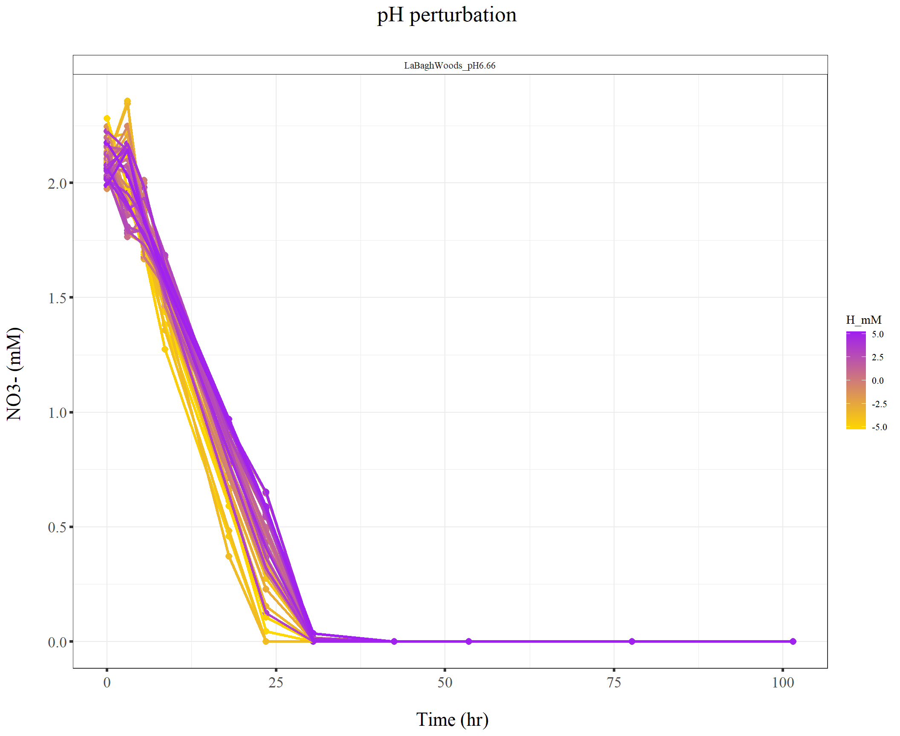

220128_Griess_pH_perturbation2
KiseokUchicago
2022-01-31
Last updated: 2022-06-08
Checks: 7 0
Knit directory: Denit_visualization_R/
This reproducible R Markdown analysis was created with workflowr (version 1.6.2). The Checks tab describes the reproducibility checks that were applied when the results were created. The Past versions tab lists the development history.
Great! Since the R Markdown file has been committed to the Git repository, you know the exact version of the code that produced these results.
Great job! The global environment was empty. Objects defined in the global environment can affect the analysis in your R Markdown file in unknown ways. For reproduciblity it’s best to always run the code in an empty environment.
The command set.seed(20210924) was run prior to running the code in the R Markdown file. Setting a seed ensures that any results that rely on randomness, e.g. subsampling or permutations, are reproducible.
Great job! Recording the operating system, R version, and package versions is critical for reproducibility.
Nice! There were no cached chunks for this analysis, so you can be confident that you successfully produced the results during this run.
Great job! Using relative paths to the files within your workflowr project makes it easier to run your code on other machines.
Great! You are using Git for version control. Tracking code development and connecting the code version to the results is critical for reproducibility.
The results in this page were generated with repository version 7905c93. See the Past versions tab to see a history of the changes made to the R Markdown and HTML files.
Note that you need to be careful to ensure that all relevant files for the analysis have been committed to Git prior to generating the results (you can use wflow_publish or wflow_git_commit). workflowr only checks the R Markdown file, but you know if there are other scripts or data files that it depends on. Below is the status of the Git repository when the results were generated:
Ignored files:
Ignored: .Rhistory
Ignored: .Rproj.user/
Untracked files:
Untracked: 211020_df_full_innate.xlsx
Untracked: 220421_Griess_antibiotics_experiment_to_kyle_remove_blanks.xlsx
Untracked: 220421_Griess_antibiotics_experiment_to_kyle_remove_blanks_add_pH.xlsx
Untracked: 220421_Griess_antibiotics_experiment_to_kyle_w_autoclaved.xlsx
Untracked: 220422_pH_Antibiotics_Sterile_experiment.xlsx
Untracked: 220519_Griess_antibiotics_experiment_to_kyle_w_autoclaved.xlsx
Untracked: 220521_pH_Antibiotics_dose_effect_experiment.xlsx
Untracked: data/120321_soil_buffering_capacity_Nichols-B.xlsx
Untracked: data/210911_TOC_sample_plate1.xlsx
Untracked: data/210922_Griess_sample_plate1-investigating.xlsx
Untracked: data/210922_Griess_sample_plate1.xlsx
Untracked: data/210927_TOC_sample_plate1_100ul.xlsx
Untracked: data/210927_TOC_sample_plate1_10ul.xlsx
Untracked: data/210928_Griess_sample_plate1.xlsx
Untracked: data/211005_Griess_sample_plate1.xlsx
Untracked: data/211007_Griess_blank_plate1.xlsx
Untracked: data/211007_Griess_blank_plate2.xlsx
Untracked: data/211008_Griess_blank_plate0.xlsx
Untracked: data/211008_Griess_blank_plate1.xlsx
Untracked: data/211017_Griess_plate0.xlsx
Untracked: data/211017_Griess_plate1.xlsx
Untracked: data/211017_Griess_plate2.xlsx
Untracked: data/211017_Griess_plate3.xlsx
Untracked: data/211017_Griess_plate4.xlsx
Untracked: data/211017_Griess_plate5.xlsx
Untracked: data/211017_Griess_plate6.xlsx
Untracked: data/211017_Griess_plate7.xlsx
Untracked: data/211017_Griess_plate8.xlsx
Untracked: data/211019_Griess_plate1.xlsx
Untracked: data/211020_Griess_plate0.xlsx
Untracked: data/211020_Griess_plate1.xlsx
Untracked: data/211020_df_full_innate.xlsx
Untracked: data/211025_Griess_no3_fit_plate0.xlsx
Untracked: data/211025_Griess_no3_fit_plate1.xlsx
Untracked: data/211025_Griess_plate0.xlsx
Untracked: data/211025_Griess_plate1.xlsx
Untracked: data/211028_Griess_plate1.xlsx
Untracked: data/211028_Griess_plate1_no3_fit.xlsx
Untracked: data/211028_Griess_plate2.xlsx
Untracked: data/211028_Griess_plate2_no3_fit.xlsx
Untracked: data/211028_Griess_plate3.xlsx
Untracked: data/211028_Griess_plate3_no3_fit.xlsx
Untracked: data/211028_Griess_plate4.xlsx
Untracked: data/211028_Griess_plate4_no3_fit.xlsx
Untracked: data/211028_time_table.xlsx
Untracked: data/211127_Griess_SUP1.xlsx
Untracked: data/211127_Griess_SUP11.xlsx
Untracked: data/211127_Griess_SUP3.xlsx
Untracked: data/211127_Griess_SUP5.xlsx
Untracked: data/211127_Griess_SUP7.xlsx
Untracked: data/211127_Griess_SUP9.xlsx
Untracked: data/211127_Griess_plate0.xlsx
Untracked: data/211127_time_table.xlsx
Untracked: data/211128_Ammonia_sample_plate10.xlsx
Untracked: data/211128_Ammonia_sample_plate11.xlsx
Untracked: data/211128_Griess_plate1.xlsx
Untracked: data/211128_Griess_plate10.xlsx
Untracked: data/211128_Griess_plate11.xlsx
Untracked: data/211128_Griess_plate2.xlsx
Untracked: data/211128_Griess_plate3.xlsx
Untracked: data/211128_Griess_plate4.xlsx
Untracked: data/211128_Griess_plate5.xlsx
Untracked: data/211128_Griess_plate6.xlsx
Untracked: data/211128_Griess_plate7.xlsx
Untracked: data/211128_Griess_plate8.xlsx
Untracked: data/211128_Griess_plate9.xlsx
Untracked: data/211128_time_table.xlsx
Untracked: data/211201_pH_colorimetric.xlsx
Untracked: data/211203_slurry_vs_water_drying_table.xlsx
Untracked: data/211203_slurry_vs_water_drying_time.xlsx
Untracked: data/211208_pH_colorimetric_T3.xlsx
Untracked: data/211208_pH_colorimetric_T4.xlsx
Untracked: data/211208_pH_colorimetric_T5.xlsx
Untracked: data/211208_pH_colorimetric_plate1.xlsx
Untracked: data/211208_pH_colorimetric_plate2.xlsx
Untracked: data/211208_pH_colorimetric_plate3.xlsx
Untracked: data/211208_time_table.xlsx
Untracked: data/211209_OD600_T1.xlsx
Untracked: data/211209_OD600_T2.xlsx
Untracked: data/211209_OD600_T3.xlsx
Untracked: data/211209_time_table.xlsx
Untracked: data/211210_pH_colorimetric_T0.xlsx
Untracked: data/211210_pH_colorimetric_T1.xlsx
Untracked: data/211210_pH_colorimetric_T2.xlsx
Untracked: data/211210_pH_colorimetric_T3.xlsx
Untracked: data/211210_time_table.xlsx
Untracked: data/211218_pH_colorimetric_t0.xlsx
Untracked: data/211218_pH_colorimetric_t1.xlsx
Untracked: data/211218_pH_colorimetric_t2.xlsx
Untracked: data/211218_pH_colorimetric_t3.xlsx
Untracked: data/211218_pH_colorimetric_t4.xlsx
Untracked: data/211218_time_table.xlsx
Untracked: data/211220_Griess_plate1.xlsx
Untracked: data/211220_Griess_plate10.xlsx
Untracked: data/211220_Griess_plate11.xlsx
Untracked: data/211220_Griess_plate2.xlsx
Untracked: data/211220_Griess_plate3.xlsx
Untracked: data/211220_Griess_plate4.xlsx
Untracked: data/211220_Griess_plate5.xlsx
Untracked: data/211220_Griess_plate6.xlsx
Untracked: data/211220_Griess_plate7.xlsx
Untracked: data/211220_Griess_plate8.xlsx
Untracked: data/211220_Griess_plate9.xlsx
Untracked: data/211220_time_table_AU.xlsx
Untracked: data/211220_time_table_BN.xlsx
Untracked: data/211224_TOC_sample_plate1.xlsx
Untracked: data/220103_Griess_T0.xlsx
Untracked: data/220103_Griess_T1.xlsx
Untracked: data/220103_Griess_T11.xlsx
Untracked: data/220103_Griess_T12.xlsx
Untracked: data/220103_Griess_T2.xlsx
Untracked: data/220103_Griess_T3.xlsx
Untracked: data/220103_Griess_T4.xlsx
Untracked: data/220103_Griess_T5.xlsx
Untracked: data/220103_Griess_T6.xlsx
Untracked: data/220103_Griess_T7.xlsx
Untracked: data/220103_Griess_T8.xlsx
Untracked: data/220103_Griess_T9.xlsx
Untracked: data/220103_time_table.xlsx
Untracked: data/220106_Ammonia_sample_plate1.xlsx
Untracked: data/220107-2_Ammonia_sample_plate1.xlsx
Untracked: data/220107-3_Ammonia_sample_plate1.xlsx
Untracked: data/220107-4_Ammonia_sample_plate1.xlsx
Untracked: data/220107-5_Ammonia_sample_plate1.xlsx
Untracked: data/220107-6_Ammonia_sample_plate1.xlsx
Untracked: data/220107-7_Ammonia_sample_plate1.xlsx
Untracked: data/220107-8_Ammonia_sample_plate1.xlsx
Untracked: data/220107-9_Ammonia_sample_plate1.xlsx
Untracked: data/220107_Ammonia_sample_plate1.xlsx
Untracked: data/220108_Ammonia_sample_plate1.xlsx
Untracked: data/220110_Ammonia_sample_plate1.xlsx
Untracked: data/220110_Ammonia_sample_plate2.xlsx
Untracked: data/220111_Ammonia_sample_T0.xlsx
Untracked: data/220111_Ammonia_sample_T1.xlsx
Untracked: data/220111_Ammonia_sample_T2.xlsx
Untracked: data/220111_Ammonia_sample_T3.xlsx
Untracked: data/220111_TOC_sample_plate1.xlsx
Untracked: data/220112_Ammonia_sample_T11.xlsx
Untracked: data/220112_Ammonia_sample_T12.xlsx
Untracked: data/220112_Ammonia_sample_T4.xlsx
Untracked: data/220112_Ammonia_sample_T5.xlsx
Untracked: data/220112_Ammonia_sample_T6.xlsx
Untracked: data/220112_Ammonia_sample_T7.xlsx
Untracked: data/220112_Ammonia_sample_T8.xlsx
Untracked: data/220112_Ammonia_sample_T9.xlsx
Untracked: data/220113_pH_colorimetric_T0.xlsx
Untracked: data/220113_pH_colorimetric_T12.xlsx
Untracked: data/220113_pH_colorimetric_T2.xlsx
Untracked: data/220113_pH_colorimetric_T3.xlsx
Untracked: data/220113_pH_colorimetric_T8.xlsx
Untracked: data/220125_pH_colorimetric_pH1_mu_opt0.099.xlsx
Untracked: data/220125_pH_colorimetric_pH1_using6.66.xlsx
Untracked: data/220125_pH_colorimetric_pH2_mu_opt0.099.xlsx
Untracked: data/220125_pH_colorimetric_pH2_using6.66.xlsx
Untracked: data/220125_time_table.xlsx
Untracked: data/220128_Ammonia_sample_plate1.xlsx
Untracked: data/220128_Ammonia_sample_plate2.xlsx
Untracked: data/220128_Ammonia_sample_plate3.xlsx
Untracked: data/220128_Ammonia_sample_plate4.xlsx
Untracked: data/220128_Ammonia_sample_plate5.xlsx
Untracked: data/220128_Ammonia_sample_plate6.xlsx
Untracked: data/220128_Griess_plate1.xlsx
Untracked: data/220128_Griess_plate2.xlsx
Untracked: data/220128_Griess_plate3.xlsx
Untracked: data/220128_Griess_plate4.xlsx
Untracked: data/220128_Griess_plate5.xlsx
Untracked: data/220128_Griess_plate6.xlsx
Untracked: data/220128_time_table.xlsx
Untracked: data/220131_Ammonia_sample_plate1.xlsx
Untracked: data/220131_Ammonia_sample_plate2.xlsx
Untracked: data/220131_Ammonia_sample_plate3.xlsx
Untracked: data/220131_Ammonia_sample_plate4.xlsx
Untracked: data/220131_Ammonia_sample_plate5.xlsx
Untracked: data/220131_Ammonia_sample_plate6.xlsx
Untracked: data/220131_Griess_plate1.xlsx
Untracked: data/220131_Griess_plate2.xlsx
Untracked: data/220131_Griess_plate3.xlsx
Untracked: data/220131_Griess_plate4.xlsx
Untracked: data/220131_Griess_plate5.xlsx
Untracked: data/220131_Griess_plate6.xlsx
Untracked: data/220131_pH_colorimetric_pH1_mu_opt_T0.xlsx
Untracked: data/220131_pH_colorimetric_pH2_mu_opt_T0.xlsx
Untracked: data/220131_time_table.xlsx
Untracked: data/220327_Griess_pastplate9.xlsx
Untracked: data/220327_Griess_plate1.xlsx
Untracked: data/220327_Griess_plate10.xlsx
Untracked: data/220327_Griess_plate11.xlsx
Untracked: data/220327_Griess_plate12.xlsx
Untracked: data/220327_Griess_plate13.xlsx
Untracked: data/220327_Griess_plate14.xlsx
Untracked: data/220327_Griess_plate15.xlsx
Untracked: data/220327_Griess_plate16.xlsx
Untracked: data/220327_Griess_plate2.xlsx
Untracked: data/220327_Griess_plate3.xlsx
Untracked: data/220327_Griess_plate4.xlsx
Untracked: data/220327_Griess_plate5.xlsx
Untracked: data/220327_Griess_plate6.xlsx
Untracked: data/220327_Griess_plate7.xlsx
Untracked: data/220327_Griess_plate8.xlsx
Untracked: data/220327_Griess_plate9.xlsx
Untracked: data/220327_time_table.xlsx
Untracked: data/220329_pH_colorimetric_pH1_mu_opt_T0.xlsx
Untracked: data/220329_pH_colorimetric_pH2_mu_opt_T0.xlsx
Untracked: data/220329_pH_colorimetric_pH3_mu_opt_T0.xlsx
Untracked: data/220329_pH_colorimetric_pH4_mu_opt_T0.xlsx
Untracked: data/220329_pH_colorimetric_pH6_mu_opt_T0.xlsx
Untracked: data/220329_pH_colorimetric_pH7_mu_opt_T0.xlsx
Untracked: data/220407_pH_colorimetric_pH3_half_mu_opt_T0.xlsx
Untracked: data/220407_pH_colorimetric_pH_base_treatment_mu_opt_T0.xlsx
Untracked: data/220407_pH_colorimetric_pH_standard_150ul_mu_opt_T0.xlsx
Untracked: data/220407_pH_colorimetric_pH_standard_300ul_mu_opt_T0.xlsx
Untracked: data/220407_pH_colorimetric_pH_standard_60ul_mu_opt_T0.xlsx
Untracked: data/220408_pH_colorimetric_pH_limit_mu_opt_water.xlsx
Untracked: data/220412_pH_colorimetric_pH_half_mu_opt_WW.xlsx
Untracked: data/220414_Ammonia_sample_plate0.xlsx
Untracked: data/220418_Ammonia_sample_plate0.xlsx
Untracked: data/220419_Ammonia_sample_plate0.xlsx
Untracked: data/220420-2_Ammonia_bcf.xlsx
Untracked: data/220420_Ammonia_sample_plate1.xlsx
Untracked: data/220420_Ammonia_sample_plate10.xlsx
Untracked: data/220420_Ammonia_sample_plate11.xlsx
Untracked: data/220420_Ammonia_sample_plate12.xlsx
Untracked: data/220420_Ammonia_sample_plate13.xlsx
Untracked: data/220420_Ammonia_sample_plate14.xlsx
Untracked: data/220420_Ammonia_sample_plate15.xlsx
Untracked: data/220420_Ammonia_sample_plate16.xlsx
Untracked: data/220420_Ammonia_sample_plate2.xlsx
Untracked: data/220420_Ammonia_sample_plate3.xlsx
Untracked: data/220420_Ammonia_sample_plate4.xlsx
Untracked: data/220420_Ammonia_sample_plate5.xlsx
Untracked: data/220420_Ammonia_sample_plate6.xlsx
Untracked: data/220420_Ammonia_sample_plate7.xlsx
Untracked: data/220420_Ammonia_sample_plate8.xlsx
Untracked: data/220420_Ammonia_sample_plate9.xlsx
Untracked: data/220421_Ammonia_df_a_bcf.xlsx
Untracked: data/220421_Ammonia_df_pH_range.xlsx
Untracked: data/220421_Ammonia_sample_plate1.xlsx
Untracked: data/220421_Ammonia_sample_plate10.xlsx
Untracked: data/220421_Ammonia_sample_plate11.xlsx
Untracked: data/220421_Ammonia_sample_plate2.xlsx
Untracked: data/220421_Ammonia_sample_plate3.xlsx
Untracked: data/220421_Ammonia_sample_plate4.xlsx
Untracked: data/220421_Ammonia_sample_plate5.xlsx
Untracked: data/220421_Ammonia_sample_plate6.xlsx
Untracked: data/220421_Ammonia_sample_plate7.xlsx
Untracked: data/220421_Ammonia_sample_plate8.xlsx
Untracked: data/220421_Ammonia_sample_plate9.xlsx
Untracked: data/220421_Ammonia_sterile.xlsx
Untracked: data/220421_Griess_antibiotics_experiment_to_kyle_remove_blanks.xlsx
Untracked: data/220421_Griess_antibiotics_experiment_to_kyle_remove_blanks_add_pH.xlsx
Untracked: data/220421_Griess_plate1.xlsx
Untracked: data/220421_Griess_plate10.xlsx
Untracked: data/220421_Griess_plate11.xlsx
Untracked: data/220421_Griess_plate2.xlsx
Untracked: data/220421_Griess_plate3.xlsx
Untracked: data/220421_Griess_plate4.xlsx
Untracked: data/220421_Griess_plate5.xlsx
Untracked: data/220421_Griess_plate6.xlsx
Untracked: data/220421_Griess_plate7.xlsx
Untracked: data/220421_Griess_plate8.xlsx
Untracked: data/220421_Griess_plate9.xlsx
Untracked: data/220421_nitrate_reduced_autoclaved_samples.xlsx
Untracked: data/220421_time_table.xlsx
Untracked: data/220422_pH_Antibiotics_Sterile_experiment.xlsx
Untracked: data/220422_pH_colorimetric_LBA_Sterile_T0_mu_opt_T0.xlsx
Untracked: data/220422_pH_colorimetric_LBA_Sterile_T4_mu_opt_T0.xlsx
Untracked: data/220422_pH_colorimetric_LBA_Sterile_T4_mu_opt_T4.xlsx
Untracked: data/220422_pH_colorimetric_LBA_Sterile_T7_mu_opt_T0.xlsx
Untracked: data/220422_pH_colorimetric_LBA_Sterile_T7_mu_opt_T7.xlsx
Untracked: data/220422_pH_colorimetric_LBA_Sterile_T9_mu_opt_T0.xlsx
Untracked: data/220422_pH_colorimetric_LBA_Sterile_T9_mu_opt_T9.xlsx
Untracked: data/220508_TOC_sample_plate1.xlsx
Untracked: data/220513_TOC_sample_plate1.xlsx
Untracked: data/220513_TOC_sample_plate2.xlsx
Untracked: data/220513_TOC_sample_plate3.xlsx
Untracked: data/220517_time_table.xlsx
Untracked: data/220519_Griess_antibiotics_dose_experiment_remove_blanks.xlsx
Untracked: data/220519_Griess_crerar7_extreme.xlsx
Untracked: data/220519_Griess_plate1.xlsx
Untracked: data/220519_Griess_plate10.xlsx
Untracked: data/220519_Griess_plate11.xlsx
Untracked: data/220519_Griess_plate2.xlsx
Untracked: data/220519_Griess_plate3.xlsx
Untracked: data/220519_Griess_plate4.xlsx
Untracked: data/220519_Griess_plate5.xlsx
Untracked: data/220519_Griess_plate6.xlsx
Untracked: data/220519_Griess_plate7.xlsx
Untracked: data/220519_Griess_plate8.xlsx
Untracked: data/220519_Griess_plate9.xlsx
Untracked: data/220519_time_table.xlsx
Untracked: data/220520_TOC_sample_plate1.xlsx
Untracked: data/220520_TOC_sample_plate2.xlsx
Untracked: data/220520_TOC_sample_plate3.xlsx
Untracked: data/220521_pH_Antibiotics_dose_effect_experiment.xlsx
Untracked: data/220521_pH_colorimetric_Barneveld2_Sterile_T0_mu_opt_T0.xlsx
Untracked: data/220521_pH_colorimetric_Barneveld2_Sterile_T10_mu_opt_T0.xlsx
Untracked: data/220521_pH_colorimetric_Barneveld2_Sterile_T7_mu_opt_T0.xlsx
Untracked: data/220526_TOC_sample_plate1.xlsx
Untracked: data/220527_TOC_sample_plate1.xlsx
Untracked: data/220601_TOC_sample_plate1.xlsx
Untracked: data/220602-2_TOC_sample_plate1.xlsx
Untracked: data/220602-2_control_OD600.xlsx
Untracked: data/220602-3_TOC_sample_plate1.xlsx
Untracked: data/220602-3_control_OD600.xlsx
Untracked: data/220602_TOC_sample_plate1.xlsx
Untracked: data/220603_100ul_OD600.xlsx
Untracked: data/220603_TOC_sample_plate1.xlsx
Untracked: data/220603_TOC_sample_plate2.xlsx
Untracked: data/220606_TOC_sample_plate1.xlsx
Untracked: data/220606_TOC_sample_plate2.xlsx
Untracked: data/ForKiseok_from_Dr_Cuhel.xlsx
Untracked: data/ForKiseok_from_Dr_Cuhel_format_edited.xlsx
Untracked: data/OD434_OD585_C_WB_T5_220329.xlsx
Untracked: data/OD434_OD585_WW_C_T0_220329.xlsx
Untracked: data/OD434_OD585_pH3_half_area_220407.xlsx
Untracked: data/OD434_OD585_pH_base_treated_T0_220407.xlsx
Untracked: data/OD434_OD585_pH_half_150ul_220412.xlsx
Untracked: data/SPNa_86437_021122_edit.xlsx
Untracked: data/SPNa_86437_021122_edit2.xlsx
Untracked: data/TOC_TN_measurement_2_labs_211014.xlsx
Untracked: data/dry_weight_curve(9.5.21).xlsx
Untracked: data/pH_data(11.17.21)-Midway_etc.xlsx
Untracked: data/pH_data(12.6.21)-Midway_incubation_endpoint.xlsx
Untracked: data/pH_data(9.14.21).xlsx
Untracked: data/pH_data(9.28.21).xlsx
Untracked: data/pH_standard_150ul_220407.xlsx
Untracked: data/pH_standard_300ul_220407.xlsx
Untracked: data/pH_standard_60ul_220407.xlsx
Untracked: data/~$220513_TOC_sample_plate1.xlsx
Untracked: data/~$SPNa_86437_021122_edit.xlsx
Untracked: past_figures/
Note that any generated files, e.g. HTML, png, CSS, etc., are not included in this status report because it is ok for generated content to have uncommitted changes.
These are the previous versions of the repository in which changes were made to the R Markdown (analysis/220128_Griess_pH_perturbation2.Rmd) and HTML (docs/220128_Griess_pH_perturbation2.html) files. If you’ve configured a remote Git repository (see ?wflow_git_remote), click on the hyperlinks in the table below to view the files as they were in that past version.
| File | Version | Author | Date | Message |
|---|---|---|---|---|
| html | 475bfe7 | KiseokUchicago | 2022-02-08 | Build site. |
| Rmd | 7eb4e58 | KiseokUchicago | 2022-02-08 | wflow_publish(“analysis/220128_Griess_pH_perturbation2.Rmd”) |
Time series analysis - pH perturbation experiment-2 (Griess assay)
Researcher: Kiseok Lee
Experiment Date: 1/21/22 - 1/25/22 (5 days)
Analysis Date: 1/31/21 Lab: Seppe Kuehn
# libraries
library(dplyr)
library(ggplot2)
library(RColorBrewer)
library(vegan)
library(tidyverse)
library(magrittr)
library(readxl)
library(reshape2)
library(gtools)
library(devtools)
library(openxlsx)
library(ape)
library(stringr)
library(tidyr)
library(ggrepel)
library(ggpubr)
## theme for ggplot
mytheme <- theme_bw() +
theme(text = element_text(family="serif")) +
theme(plot.title = element_text(size = 19,hjust = 0.5, family="serif")) +
theme(axis.title.x = element_text(size = 17,hjust = 0.5, family="serif")) +
theme(axis.title.y = element_text(size = 17,hjust = 0.5, family="serif")) +
theme(axis.text.x = element_text(hjust = 0.5, vjust=0.3,size=13, family="serif"))+
theme(axis.text.y = element_text(size=10, family="serif"))+
theme(panel.grid.major = element_blank()) +
theme(panel.grid.minor = element_blank(),panel.background=element_blank(),panel.border=element_blank(),plot.background=element_blank()) +
theme(axis.ticks = element_line(size = 1.1))
mytheme_2d <- theme_bw() +
theme(text = element_text(family="serif")) +
theme(plot.title = element_text(size = 19,hjust = 0.5, family="serif")) +
theme(axis.title.x = element_text(size = 17,hjust = 0.5, family="serif")) +
theme(axis.title.y = element_text(size = 17,hjust = 0.5, family="serif")) +
theme(axis.text.x = element_text(hjust = 0.5, vjust=0.3,size=13, family="serif"))+
theme(axis.text.y = element_text(size=13, family="serif"))+
# theme(panel.grid.major = element_blank()) +
# theme(panel.grid.minor = element_blank(),panel.background=element_blank(),plot.background=element_blank()) +
theme(axis.ticks = element_line(size = 1.1))
# color collection
my_color_collection <- c(
"#CBD588", "#5F7FC7", "orange", "#AD6F3B", "#673770",
"#D14285", "#652926", "#C84248", "#8569D5", "#5E738F",
"#D1A33D", "#8A7C64", "#599861","#616163", "#FFCDB2",
"#6D9F71", "#242F40",
"#CCA43B", "#F92A82", "#ED7B84", "#7EB77F",
"#DEC4A1", "#E5D1D0", '#0E8482', '#C9DAEA', '#337357',
'#95C623', '#E55812', '#04471C', '#F2D7EE', '#D3BCC0',
'#A5668B', '#69306D', '#0E103D', '#1A535C', '#4ECDC4',
'#F7FFF7', '#FF6B6B', '#FFE66D', '#6699CC', '#FFF275',
'#FF8C42', '#FF3C38', '#A23E48', '#000000', '#CF5C36',
'#EEE5E9', '#7C7C7C', '#EFC88B', '#2E5266', '#6E8898',
'#9FB1BC', '#D3D0CB', '#E2C044', '#5BC0EB', '#FDE74C',
'#9BC53D', '#E55934', '#FA7921', "#CD9BCD", "#508578", "#DA5724")
# for git push, use this instead of using wflow_git_push()
# git push -u origin master (in the Git app / in the working directory)
# for making pdf file
library(rmarkdown)
# render("analysis/~~.Rmd", "pdf_document")1. Import data table from python code
We are going to use the vcl3 treated standard curve that is fitted with pure nitrate standards
# import file
df_plate1 <- openxlsx::read.xlsx("data/220128_Griess_plate1.xlsx")
df_plate2 <- openxlsx::read.xlsx("data/220128_Griess_plate2.xlsx")
df_plate3 <- openxlsx::read.xlsx("data/220128_Griess_plate3.xlsx")
df_plate4 <- openxlsx::read.xlsx("data/220128_Griess_plate4.xlsx")
df_plate5 <- openxlsx::read.xlsx("data/220128_Griess_plate5.xlsx")
df_plate6 <- openxlsx::read.xlsx("data/220128_Griess_plate6.xlsx")
head(df_plate1) Well Nitrite_input Nitrate_input Soil Sample_type
1 A01 0 2 LaBaghWoods_pH6.66 Slurry
2 A02 0 2 LaBaghWoods_pH6.66 Slurry
3 A03 0 2 LaBaghWoods_pH6.66 Slurry
4 A04 0 2 LaBaghWoods_pH6.66 Slurry
5 A05 0 2 LaBaghWoods_pH6.66 Slurry
6 A06 0 2 LaBaghWoods_pH6.66 Slurry
Titration_type Unit Concentration_M Added_ul Time_point NO2_OD540
1 NaOH 0 0.0 10 T0 0.00275
2 NaOH 2 0.1 10 T0 0.00375
3 NaOH 4 0.2 10 T0 0.00225
4 NaOH 6 0.3 10 T0 0.00260
5 NaOH 8 0.4 10 T0 0.00245
6 NaOH 10 0.5 10 T0 0.00240
NO2NO3_OD540 NO2_mM NO2NO3_mM NO3_mM
1 0.93110 0.01166976 0.9315592 0.9198895
2 0.79840 0.01217248 0.7907519 0.7785794
3 0.79460 0.01141841 0.7867530 0.7753346
4 0.85150 0.01159435 0.8468230 0.8352287
5 0.81185 0.01151895 0.8049205 0.7934016
6 0.79395 0.01149382 0.7860691 0.7745753colnames(df_plate1) [1] "Well" "Nitrite_input" "Nitrate_input" "Soil"
[5] "Sample_type" "Titration_type" "Unit" "Concentration_M"
[9] "Added_ul" "Time_point" "NO2_OD540" "NO2NO3_OD540"
[13] "NO2_mM" "NO2NO3_mM" "NO3_mM" dim(df_plate1)[1] 96 15head(df_plate2) Well Nitrite_input Nitrate_input Soil Sample_type
1 A01 0 2 LaBaghWoods_pH6.66 Slurry
2 A02 0 2 LaBaghWoods_pH6.66 Slurry
3 A03 0 2 LaBaghWoods_pH6.66 Slurry
4 A04 0 2 LaBaghWoods_pH6.66 Slurry
5 A05 0 2 LaBaghWoods_pH6.66 Slurry
6 A06 0 2 LaBaghWoods_pH6.66 Slurry
Titration_type Unit Concentration_M Added_ul Time_point NO2_OD540
1 NaOH 0 0.0 10 T2 0.02960
2 NaOH 2 0.1 10 T2 0.03700
3 NaOH 4 0.2 10 T2 0.04035
4 NaOH 6 0.3 10 T2 0.03390
5 NaOH 8 0.4 10 T2 0.04480
6 NaOH 10 0.5 10 T2 0.06145
NO2NO3_OD540 NO2_mM NO2NO3_mM NO3_mM
1 0.75040 0.02518325 0.7403727 0.7151895
2 0.74970 0.02891329 0.7396402 0.7107269
3 0.71310 0.03060269 0.7014217 0.6708190
4 0.67985 0.02735041 0.6668437 0.6394933
5 0.70560 0.03284760 0.6936104 0.6607628
6 0.64845 0.04125497 0.6343125 0.5930575colnames(df_plate2) [1] "Well" "Nitrite_input" "Nitrate_input" "Soil"
[5] "Sample_type" "Titration_type" "Unit" "Concentration_M"
[9] "Added_ul" "Time_point" "NO2_OD540" "NO2NO3_OD540"
[13] "NO2_mM" "NO2NO3_mM" "NO3_mM" dim(df_plate2)[1] 96 15head(df_plate3) Well Nitrite_input Nitrate_input Soil Sample_type
1 A01 0 2 LaBaghWoods_pH6.66 Slurry
2 A02 0 2 LaBaghWoods_pH6.66 Slurry
3 A03 0 2 LaBaghWoods_pH6.66 Slurry
4 A04 0 2 LaBaghWoods_pH6.66 Slurry
5 A05 0 2 LaBaghWoods_pH6.66 Slurry
6 A06 0 2 LaBaghWoods_pH6.66 Slurry
Titration_type Unit Concentration_M Added_ul Time_point NO2_OD540
1 NaOH 0 0.0 10 T4 0.00755
2 NaOH 2 0.1 10 T4 0.00495
3 NaOH 4 0.2 10 T4 0.00550
4 NaOH 6 0.3 10 T4 0.00595
5 NaOH 8 0.4 10 T4 0.00615
6 NaOH 10 0.5 10 T4 0.00900
NO2NO3_OD540 NO2_mM NO2NO3_mM NO3_mM
1 0.34490 0.01408323 0.3257324 0.3116492
2 0.30820 0.01277580 0.2891200 0.2763442
3 0.30340 0.01305235 0.2843421 0.2712898
4 0.35160 0.01327862 0.3324321 0.3191535
5 0.31355 0.01337919 0.2944482 0.2810690
6 0.31995 0.01481250 0.3008262 0.2860137colnames(df_plate3) [1] "Well" "Nitrite_input" "Nitrate_input" "Soil"
[5] "Sample_type" "Titration_type" "Unit" "Concentration_M"
[9] "Added_ul" "Time_point" "NO2_OD540" "NO2NO3_OD540"
[13] "NO2_mM" "NO2NO3_mM" "NO3_mM" dim(df_plate3)[1] 96 15head(df_plate4) Well Nitrite_input Nitrate_input Soil Sample_type
1 A01 0 2 LaBaghWoods_pH6.66 Slurry
2 A02 0 2 LaBaghWoods_pH6.66 Slurry
3 A03 0 2 LaBaghWoods_pH6.66 Slurry
4 A04 0 2 LaBaghWoods_pH6.66 Slurry
5 A05 0 2 LaBaghWoods_pH6.66 Slurry
6 A06 0 2 LaBaghWoods_pH6.66 Slurry
Titration_type Unit Concentration_M Added_ul Time_point NO2_OD540
1 NaOH 0 0.0 10 T6 0.00410
2 NaOH 2 0.1 10 T6 0.00305
3 NaOH 4 0.2 10 T6 0.00235
4 NaOH 6 0.3 10 T6 0.00220
5 NaOH 8 0.4 10 T6 0.00370
6 NaOH 10 0.5 10 T6 0.00250
NO2NO3_OD540 NO2_mM NO2NO3_mM NO3_mM
1 0 0.01234844 0 0
2 0 0.01182057 0 0
3 0 0.01146868 0 0
4 0 0.01139328 0 0
5 0 0.01214734 0 0
6 0 0.01154409 0 0colnames(df_plate4) [1] "Well" "Nitrite_input" "Nitrate_input" "Soil"
[5] "Sample_type" "Titration_type" "Unit" "Concentration_M"
[9] "Added_ul" "Time_point" "NO2_OD540" "NO2NO3_OD540"
[13] "NO2_mM" "NO2NO3_mM" "NO3_mM" dim(df_plate4)[1] 96 15head(df_plate5) Well Nitrite_input Nitrate_input Soil Sample_type
1 A01 0 2 LaBaghWoods_pH6.66 Slurry
2 A02 0 2 LaBaghWoods_pH6.66 Slurry
3 A03 0 2 LaBaghWoods_pH6.66 Slurry
4 A04 0 2 LaBaghWoods_pH6.66 Slurry
5 A05 0 2 LaBaghWoods_pH6.66 Slurry
6 A06 0 2 LaBaghWoods_pH6.66 Slurry
Titration_type Unit Concentration_M Added_ul Time_point NO2_OD540
1 NaOH 0 0.0 10 T8 0.00415
2 NaOH 2 0.1 10 T8 0.00255
3 NaOH 4 0.2 10 T8 0.00415
4 NaOH 6 0.3 10 T8 0.00580
5 NaOH 8 0.4 10 T8 0.00465
6 NaOH 10 0.5 10 T8 0.00370
NO2NO3_OD540 NO2_mM NO2NO3_mM NO3_mM
1 0 0.01237358 0 0
2 0 0.01156922 0 0
3 0 0.01237358 0 0
4 0 0.01320320 0 0
5 0 0.01262497 0 0
6 0 0.01214734 0 0colnames(df_plate5) [1] "Well" "Nitrite_input" "Nitrate_input" "Soil"
[5] "Sample_type" "Titration_type" "Unit" "Concentration_M"
[9] "Added_ul" "Time_point" "NO2_OD540" "NO2NO3_OD540"
[13] "NO2_mM" "NO2NO3_mM" "NO3_mM" dim(df_plate5)[1] 96 15head(df_plate6) Well Nitrite_input Nitrate_input Soil Sample_type
1 A01 0 2 LaBaghWoods_pH6.66 Slurry
2 A02 0 2 LaBaghWoods_pH6.66 Slurry
3 A03 0 2 LaBaghWoods_pH6.66 Slurry
4 A04 0 2 LaBaghWoods_pH6.66 Slurry
5 A05 0 2 LaBaghWoods_pH6.66 Slurry
6 A06 0 2 LaBaghWoods_pH6.66 Slurry
Titration_type Unit Concentration_M Added_ul Time_point NO2_OD540
1 NaOH 0 0.0 10 T10 0.00900
2 NaOH 2 0.1 10 T10 0.01355
3 NaOH 4 0.2 10 T10 0.00940
4 NaOH 6 0.3 10 T10 0.01150
5 NaOH 8 0.4 10 T10 0.01015
6 NaOH 10 0.5 10 T10 0.01190
NO2NO3_OD540 NO2_mM NO2NO3_mM NO3_mM
1 0 0.01481250 0 0
2 0 0.01710150 0 0
3 0 0.01501369 0 0
4 0 0.01607008 0 0
5 0 0.01539095 0 0
6 0 0.01627132 0 0colnames(df_plate6) [1] "Well" "Nitrite_input" "Nitrate_input" "Soil"
[5] "Sample_type" "Titration_type" "Unit" "Concentration_M"
[9] "Added_ul" "Time_point" "NO2_OD540" "NO2NO3_OD540"
[13] "NO2_mM" "NO2NO3_mM" "NO3_mM" dim(df_plate6)[1] 52 15# X1 to Well
# df_p0 %<>% rename(Well = X1)
# df_p2 %<>% rename(Well = X1)
# df_p3 %<>% rename(Well = X1)
# df_p4 %<>% rename(Well = X1)
# df_p5 %<>% rename(Well = X1)
# df_p6 %<>% rename(Well = X1)
# df_p7 %<>% rename(Well = X1)
# df_p8 %<>% rename(Well = X1)
# df_p9 %<>% rename(Well = X1)
# df_p10 %<>% rename(Well = X1)
# df_p11 %<>% rename(Well = X1)
# remove wells that were contaminated during the experiment
# df_p1 %<>% filter(!(Well %in% c("B03","A05","A12","B12"))) # filter burst issue
# df_p6 %<>% filter(!(Well %in% c("A11"))) # filter burst issue
# df_p8 %<>% filter(!(Well %in% c("A07", "A08", "E08"))) # filter burst issue
# df_p11 %<>% filter(!(Well %in% c("A01"))) # filter burst issue # G11 was removed because of abnormal value compared to other 2 replicates
# dim(df_p4)
# bind two dataframe
df_p <- rbind(df_plate1, df_plate2, df_plate3, df_plate4, df_plate5, df_plate6)
dim(df_p)[1] 532 15# remove NA
dim(df_p)[1] 532 15df_p <- na.omit(df_p)
dim(df_p) # 532[1] 532 15# multiply dilution factor which is 5/2
df_p %<>% select(-NO2_OD540, -NO2NO3_OD540)
df_p %<>% mutate(NO2_mM = NO2_mM * (5/2), NO2NO3_mM = NO2NO3_mM * (5/2), NO3_mM = NO3_mM * (5/2))
# get out the T0_deep
df_T0_deep <- df_p %>% filter(Time_point == "T0_deep")
df_p %<>% filter(!(Time_point == "T0_deep"))
dim(df_p) # 532 -> 528[1] 528 13# Get the metadata for time point and left join
Time_table <- openxlsx::read.xlsx("data/220128_time_table.xlsx")
# Time_table_BN <- openxlsx::read.xlsx("data/220128_time_table_BN.xlsx")
# Time_table <- rbind(Time_table_AU, Time_table_BN)
Time_table %<>% select(-Date)
dim(df_p)[1] 528 13df_p <- df_p %>% left_join(Time_table, by=("Time_point"="Time_point"))
dim(df_p)[1] 528 16colnames(df_p) [1] "Well" "Nitrite_input" "Nitrate_input" "Soil"
[5] "Sample_type" "Titration_type" "Unit" "Concentration_M"
[9] "Added_ul" "Time_point" "NO2_mM" "NO2NO3_mM"
[13] "NO3_mM" "Time_minutes" "Time_hours" "Time_days" # time_point order
df_p$Time_point <- factor(df_p$Time_point, levels = paste0("T",0:10))2. Get average and standard deviation & Moisture correction & Blank correction
# plot to see
ggplot(df_p, aes(x=Time_point, y=NO3_mM, color=Sample_type, group=Sample_type)) +
geom_point(size=2.5, shape=21) +
# geom_line(size=1)+
scale_fill_brewer(palette='Set2') +
ylab("NO3- (mM) \n") +
xlab("\n Nitrate_spike_in (mM)") +
# scale_y_continuous(breaks = seq(0,0.3,0.05), limits=c(0, 0.3))+
ggtitle("Without averaging \n") +
mytheme_2d# average technical replicate (here only 1 replicate per pH perturbation)
colnames(df_p) [1] "Well" "Nitrite_input" "Nitrate_input" "Soil"
[5] "Sample_type" "Titration_type" "Unit" "Concentration_M"
[9] "Added_ul" "Time_point" "NO2_mM" "NO2NO3_mM"
[13] "NO3_mM" "Time_minutes" "Time_hours" "Time_days" dim(df_p)[1] 528 16# df_p <- df_p %>% group_by(Nitrite_input, Nitrate_input, Soil, Titration_type, Concentration_M, Added_ul, Sample_type, Time_point, Time_minutes, Time_hours, Time_days) %>% summarise(NO2_mM = mean(NO2_mM), Std_NO2_mM = sd(NO2_mM), NO3_mM = mean(NO3_mM), Std_NO3_mM = sd(NO3_mM)) %>% ungroup()
# mols and molarity unit conversion
# test
df_p$Titration_type %>% length()[1] 528# Setting H_mM column
# df_soil <- df_p %>% filter(Titration_type %in% c("NaOH","HCl"))
Added_Volume <- 1.7 # ml
Soil_mg <- 0.85
moisture_percent_1 = 23.6 # LaBaghWoods1
Added_Volume + Soil_mg*(moisture_percent_1/100)[1] 1.9006# moisture_percent_2 = 33.2 # Allandale
df_p$Added_ul <- ifelse(df_p$Titration_type == "NaOH", -1*df_p$Added_ul, df_p$Added_ul) # HCl is +, NaOH is -
df_p %<>% mutate(H_mol = Concentration_M * Added_ul * 10^(-6)) # Calculate H mol
df_p$Volume <- ifelse(df_p$Soil == "LaBaghWoods_pH6.66", Added_Volume + Soil_mg*(moisture_percent_1/100), 0) # Calc total volume
# df_p$Volume <- ifelse(df_p$Soil == "Allandale_pH4", Added_Volume + Soil_mg*(moisture_percent_2/100), df_p$Volume) # Calc total volume
# df_p$Volume %>% unique()
df_p %<>% mutate(H_Molarity = H_mol / (Volume * 10^(-3)))
df_p %<>% mutate(H_mM = H_Molarity * 1000)
# openxlsx::write.xlsx(df_p, "df_p.xlsx")
# how many levels of H_mM?
df_p %>% filter(Soil == "LaBaghWoods_pH6.66")%>% select(H_mM) %>% unique() %>% arrange(H_mM) H_mM
1 -5.2614964
2 -4.9984216
3 -4.7353467
4 -4.4722719
5 -4.2091971
6 -3.9461223
7 -3.6830475
8 -3.4199726
9 -3.1568978
10 -2.8938230
11 -2.6307482
12 -2.3676734
13 -2.1045985
14 -1.8415237
15 -1.5784489
16 -1.3153741
17 -1.0522993
18 -0.7892245
19 -0.5261496
20 -0.2630748
21 0.0000000
22 0.2630748
23 0.5261496
24 0.7892245
25 1.0522993
26 1.3153741
27 1.5784489
28 1.8415237
29 2.1045985
30 2.3676734
31 2.6307482
32 2.8938230
33 3.1568978
34 3.4199726
35 3.6830475
36 3.9461223
37 4.2091971
38 4.4722719
39 4.7353467
40 4.9984216
41 5.2614964# df_p %>% filter(Soil == "Allandale_pH4")%>% select(H_mM) %>% unique() %>% arrange()
colnames(df_p) [1] "Well" "Nitrite_input" "Nitrate_input" "Soil"
[5] "Sample_type" "Titration_type" "Unit" "Concentration_M"
[9] "Added_ul" "Time_point" "NO2_mM" "NO2NO3_mM"
[13] "NO3_mM" "Time_minutes" "Time_hours" "Time_days"
[17] "H_mol" "Volume" "H_Molarity" "H_mM" ## Moisture correction
dim(df_p)[1] 528 20# Testing negative samples
df_no3_blank <- df_p %>% filter(Sample_type == "Blank_Nitrate") # Use Blank_Nitrate instead in the future
df_no3_blank # 33 Well Nitrite_input Nitrate_input Soil Sample_type
1 G06 0 2 LaBaghWoods_pH6.66 Blank_Nitrate
2 G12 0 2 LaBaghWoods_pH6.66 Blank_Nitrate
3 H05 0 2 LaBaghWoods_pH6.66 Blank_Nitrate
4 H06 0 2 LaBaghWoods_pH6.66 Blank_Nitrate
5 H11 0 2 LaBaghWoods_pH6.66 Blank_Nitrate
6 H12 0 2 LaBaghWoods_pH6.66 Blank_Nitrate
7 G06 0 2 LaBaghWoods_pH6.66 Blank_Nitrate
8 G12 0 2 LaBaghWoods_pH6.66 Blank_Nitrate
9 H05 0 2 LaBaghWoods_pH6.66 Blank_Nitrate
10 H06 0 2 LaBaghWoods_pH6.66 Blank_Nitrate
11 H11 0 2 LaBaghWoods_pH6.66 Blank_Nitrate
12 H12 0 2 LaBaghWoods_pH6.66 Blank_Nitrate
13 G06 0 2 LaBaghWoods_pH6.66 Blank_Nitrate
14 G12 0 2 LaBaghWoods_pH6.66 Blank_Nitrate
15 H05 0 2 LaBaghWoods_pH6.66 Blank_Nitrate
16 H06 0 2 LaBaghWoods_pH6.66 Blank_Nitrate
17 H11 0 2 LaBaghWoods_pH6.66 Blank_Nitrate
18 H12 0 2 LaBaghWoods_pH6.66 Blank_Nitrate
19 G06 0 2 LaBaghWoods_pH6.66 Blank_Nitrate
20 G12 0 2 LaBaghWoods_pH6.66 Blank_Nitrate
21 H05 0 2 LaBaghWoods_pH6.66 Blank_Nitrate
22 H06 0 2 LaBaghWoods_pH6.66 Blank_Nitrate
23 H11 0 2 LaBaghWoods_pH6.66 Blank_Nitrate
24 H12 0 2 LaBaghWoods_pH6.66 Blank_Nitrate
25 G06 0 2 LaBaghWoods_pH6.66 Blank_Nitrate
26 G12 0 2 LaBaghWoods_pH6.66 Blank_Nitrate
27 H05 0 2 LaBaghWoods_pH6.66 Blank_Nitrate
28 H06 0 2 LaBaghWoods_pH6.66 Blank_Nitrate
29 H11 0 2 LaBaghWoods_pH6.66 Blank_Nitrate
30 H12 0 2 LaBaghWoods_pH6.66 Blank_Nitrate
31 G06 0 2 LaBaghWoods_pH6.66 Blank_Nitrate
32 H05 0 2 LaBaghWoods_pH6.66 Blank_Nitrate
33 H06 0 2 LaBaghWoods_pH6.66 Blank_Nitrate
Titration_type Unit Concentration_M Added_ul Time_point NO2_mM NO2NO3_mM
1 Nitrate 0 0 10 T0 0.02892305 2.072082
2 Nitrate 0 0 10 T1 0.02879738 1.953209
3 Nitrate 0 0 10 T0 0.02722657 2.123812
4 Nitrate 0 0 10 T0 0.02886021 2.126064
5 Nitrate 0 0 10 T1 0.02697526 2.013224
6 Nitrate 0 0 10 T1 0.02672395 2.180048
7 Nitrate 0 0 10 T2 0.02898589 2.027594
8 Nitrate 0 0 10 T3 0.03225376 1.998468
9 Nitrate 0 0 10 T2 0.02823187 2.001761
10 Nitrate 0 0 10 T2 0.03005415 2.022319
11 Nitrate 0 0 10 T3 0.03093395 2.007030
12 Nitrate 0 0 10 T3 0.02779204 2.006240
13 Nitrate 0 0 10 T4 0.03011699 2.107790
14 Nitrate 0 0 10 T5 0.03112249 2.094029
15 Nitrate 0 0 10 T4 0.02967711 2.087416
16 Nitrate 0 0 10 T4 0.02955143 2.071949
17 Nitrate 0 0 10 T5 0.02798054 2.064022
18 Nitrate 0 0 10 T5 0.02691243 2.060720
19 Nitrate 0 0 10 T6 0.02760355 2.113615
20 Nitrate 0 0 10 T7 0.02980278 2.136929
21 Nitrate 0 0 10 T6 0.02842037 2.088606
22 Nitrate 0 0 10 T6 0.02860887 2.121295
23 Nitrate 0 0 10 T7 0.02835753 2.081069
24 Nitrate 0 0 10 T7 0.02678677 2.116528
25 Nitrate 0 0 10 T8 0.02779204 2.159738
26 Nitrate 0 0 10 T9 0.02948859 2.163055
27 Nitrate 0 0 10 T8 0.02973994 2.174736
28 Nitrate 0 0 10 T8 0.02992847 2.142497
29 Nitrate 0 0 10 T9 0.02980278 2.135869
30 Nitrate 0 0 10 T9 0.02936291 2.218462
31 Nitrate 0 0 10 T10 0.02967711 2.392374
32 Nitrate 0 0 10 T10 0.02772921 2.330637
33 Nitrate 0 0 10 T10 0.02892305 2.333044
NO3_mM Time_minutes Time_hours Time_days H_mol Volume H_Molarity H_mM
1 2.043159 0 0.000000 0.0000000 0 1.9006 0 0
2 1.924412 180 3.000000 0.1250000 0 1.9006 0 0
3 2.096585 0 0.000000 0.0000000 0 1.9006 0 0
4 2.097204 0 0.000000 0.0000000 0 1.9006 0 0
5 1.986249 180 3.000000 0.1250000 0 1.9006 0 0
6 2.153324 180 3.000000 0.1250000 0 1.9006 0 0
7 1.998608 330 5.500000 0.2291667 0 1.9006 0 0
8 1.966214 515 8.583333 0.3576389 0 1.9006 0 0
9 1.973529 330 5.500000 0.2291667 0 1.9006 0 0
10 1.992265 330 5.500000 0.2291667 0 1.9006 0 0
11 1.976097 515 8.583333 0.3576389 0 1.9006 0 0
12 1.978448 515 8.583333 0.3576389 0 1.9006 0 0
13 2.077673 1080 18.000000 0.7500000 0 1.9006 0 0
14 2.062906 1410 23.500000 0.9791667 0 1.9006 0 0
15 2.057739 1080 18.000000 0.7500000 0 1.9006 0 0
16 2.042398 1080 18.000000 0.7500000 0 1.9006 0 0
17 2.036042 1410 23.500000 0.9791667 0 1.9006 0 0
18 2.033808 1410 23.500000 0.9791667 0 1.9006 0 0
19 2.086011 1830 30.500000 1.2708333 0 1.9006 0 0
20 2.107127 2550 42.500000 1.7708333 0 1.9006 0 0
21 2.060186 1830 30.500000 1.2708333 0 1.9006 0 0
22 2.092687 1830 30.500000 1.2708333 0 1.9006 0 0
23 2.052712 2550 42.500000 1.7708333 0 1.9006 0 0
24 2.089741 2550 42.500000 1.7708333 0 1.9006 0 0
25 2.131946 3210 53.500000 2.2291667 0 1.9006 0 0
26 2.133567 4660 77.666667 3.2361111 0 1.9006 0 0
27 2.144996 3210 53.500000 2.2291667 0 1.9006 0 0
28 2.112568 3210 53.500000 2.2291667 0 1.9006 0 0
29 2.106066 4660 77.666667 3.2361111 0 1.9006 0 0
30 2.189099 4660 77.666667 3.2361111 0 1.9006 0 0
31 2.362697 6090 101.500000 4.2291667 0 1.9006 0 0
32 2.302907 6090 101.500000 4.2291667 0 1.9006 0 0
33 2.304121 6090 101.500000 4.2291667 0 1.9006 0 0df_no2_blank <- df_p %>% filter(Sample_type == "Blank_Nitrite")
df_no2_blank # 33 Well Nitrite_input Nitrate_input Soil Sample_type
1 E06 2 0 LaBaghWoods_pH6.66 Blank_Nitrite
2 E12 2 0 LaBaghWoods_pH6.66 Blank_Nitrite
3 F05 2 0 LaBaghWoods_pH6.66 Blank_Nitrite
4 F06 2 0 LaBaghWoods_pH6.66 Blank_Nitrite
5 F11 2 0 LaBaghWoods_pH6.66 Blank_Nitrite
6 F12 2 0 LaBaghWoods_pH6.66 Blank_Nitrite
7 E06 2 0 LaBaghWoods_pH6.66 Blank_Nitrite
8 E12 2 0 LaBaghWoods_pH6.66 Blank_Nitrite
9 F05 2 0 LaBaghWoods_pH6.66 Blank_Nitrite
10 F06 2 0 LaBaghWoods_pH6.66 Blank_Nitrite
11 F11 2 0 LaBaghWoods_pH6.66 Blank_Nitrite
12 F12 2 0 LaBaghWoods_pH6.66 Blank_Nitrite
13 E06 2 0 LaBaghWoods_pH6.66 Blank_Nitrite
14 E12 2 0 LaBaghWoods_pH6.66 Blank_Nitrite
15 F05 2 0 LaBaghWoods_pH6.66 Blank_Nitrite
16 F06 2 0 LaBaghWoods_pH6.66 Blank_Nitrite
17 F11 2 0 LaBaghWoods_pH6.66 Blank_Nitrite
18 F12 2 0 LaBaghWoods_pH6.66 Blank_Nitrite
19 E06 2 0 LaBaghWoods_pH6.66 Blank_Nitrite
20 E12 2 0 LaBaghWoods_pH6.66 Blank_Nitrite
21 F05 2 0 LaBaghWoods_pH6.66 Blank_Nitrite
22 F06 2 0 LaBaghWoods_pH6.66 Blank_Nitrite
23 F11 2 0 LaBaghWoods_pH6.66 Blank_Nitrite
24 F12 2 0 LaBaghWoods_pH6.66 Blank_Nitrite
25 E06 2 0 LaBaghWoods_pH6.66 Blank_Nitrite
26 E12 2 0 LaBaghWoods_pH6.66 Blank_Nitrite
27 F05 2 0 LaBaghWoods_pH6.66 Blank_Nitrite
28 F06 2 0 LaBaghWoods_pH6.66 Blank_Nitrite
29 F11 2 0 LaBaghWoods_pH6.66 Blank_Nitrite
30 F12 2 0 LaBaghWoods_pH6.66 Blank_Nitrite
31 E06 2 0 LaBaghWoods_pH6.66 Blank_Nitrite
32 F05 2 0 LaBaghWoods_pH6.66 Blank_Nitrite
33 F06 2 0 LaBaghWoods_pH6.66 Blank_Nitrite
Titration_type Unit Concentration_M Added_ul Time_point NO2_mM NO2NO3_mM
1 Nitrite 0 0 10 T0 2.024611 1.998073
2 Nitrite 0 0 10 T1 1.913978 1.912110
3 Nitrite 0 0 10 T0 2.047575 2.104878
4 Nitrite 0 0 10 T0 2.057754 2.056626
5 Nitrite 0 0 10 T1 1.914485 1.940990
6 Nitrite 0 0 10 T1 1.982161 1.984117
7 Nitrite 0 0 10 T2 2.032139 1.968066
8 Nitrite 0 0 10 T3 2.013145 1.941384
9 Nitrite 0 0 10 T2 2.047428 2.002420
10 Nitrite 0 0 10 T2 2.095617 2.022451
11 Nitrite 0 0 10 T3 2.024173 1.972538
12 Nitrite 0 0 10 T3 2.048673 1.991094
13 Nitrite 0 0 10 T4 2.081515 1.966619
14 Nitrite 0 0 10 T5 2.088857 1.971749
15 Nitrite 0 0 10 T4 2.146505 2.031682
16 Nitrite 0 0 10 T4 2.147981 2.033133
17 Nitrite 0 0 10 T5 2.114739 2.026011
18 Nitrite 0 0 10 T5 2.073369 1.966882
19 Nitrite 0 0 10 T6 2.177762 2.053061
20 Nitrite 0 0 10 T7 2.108631 1.984775
21 Nitrite 0 0 10 T6 2.169774 2.045140
22 Nitrite 0 0 10 T6 2.171622 2.034452
23 Nitrite 0 0 10 T7 2.139938 1.992279
24 Nitrite 0 0 10 T7 2.124754 1.986750
25 Nitrite 0 0 10 T8 2.240742 2.082259
26 Nitrite 0 0 10 T9 2.238958 2.105937
27 Nitrite 0 0 10 T8 2.261586 2.124077
28 Nitrite 0 0 10 T8 2.235909 2.096675
29 Nitrite 0 0 10 T9 2.308242 2.184165
30 Nitrite 0 0 10 T9 2.275750 2.141039
31 Nitrite 0 0 10 T10 2.402481 2.319540
32 Nitrite 0 0 10 T10 2.432750 2.285884
33 Nitrite 0 0 10 T10 2.352152 2.202370
NO3_mM Time_minutes Time_hours Time_days H_mol Volume H_Molarity H_mM
1 0.00000000 0 0.000000 0.0000000 0 1.9006 0 0
2 0.00000000 180 3.000000 0.1250000 0 1.9006 0 0
3 0.05730357 0 0.000000 0.0000000 0 1.9006 0 0
4 0.00000000 0 0.000000 0.0000000 0 1.9006 0 0
5 0.02650443 180 3.000000 0.1250000 0 1.9006 0 0
6 0.00195663 180 3.000000 0.1250000 0 1.9006 0 0
7 0.00000000 330 5.500000 0.2291667 0 1.9006 0 0
8 0.00000000 515 8.583333 0.3576389 0 1.9006 0 0
9 0.00000000 330 5.500000 0.2291667 0 1.9006 0 0
10 0.00000000 330 5.500000 0.2291667 0 1.9006 0 0
11 0.00000000 515 8.583333 0.3576389 0 1.9006 0 0
12 0.00000000 515 8.583333 0.3576389 0 1.9006 0 0
13 0.00000000 1080 18.000000 0.7500000 0 1.9006 0 0
14 0.00000000 1410 23.500000 0.9791667 0 1.9006 0 0
15 0.00000000 1080 18.000000 0.7500000 0 1.9006 0 0
16 0.00000000 1080 18.000000 0.7500000 0 1.9006 0 0
17 0.00000000 1410 23.500000 0.9791667 0 1.9006 0 0
18 0.00000000 1410 23.500000 0.9791667 0 1.9006 0 0
19 0.00000000 1830 30.500000 1.2708333 0 1.9006 0 0
20 0.00000000 2550 42.500000 1.7708333 0 1.9006 0 0
21 0.00000000 1830 30.500000 1.2708333 0 1.9006 0 0
22 0.00000000 1830 30.500000 1.2708333 0 1.9006 0 0
23 0.00000000 2550 42.500000 1.7708333 0 1.9006 0 0
24 0.00000000 2550 42.500000 1.7708333 0 1.9006 0 0
25 0.00000000 3210 53.500000 2.2291667 0 1.9006 0 0
26 0.00000000 4660 77.666667 3.2361111 0 1.9006 0 0
27 0.00000000 3210 53.500000 2.2291667 0 1.9006 0 0
28 0.00000000 3210 53.500000 2.2291667 0 1.9006 0 0
29 0.00000000 4660 77.666667 3.2361111 0 1.9006 0 0
30 0.00000000 4660 77.666667 3.2361111 0 1.9006 0 0
31 0.00000000 6090 101.500000 4.2291667 0 1.9006 0 0
32 0.00000000 6090 101.500000 4.2291667 0 1.9006 0 0
33 0.00000000 6090 101.500000 4.2291667 0 1.9006 0 0# close to zero
# 1. Apply moisture correction factor (correcting for moisture in soil)
soil_spike_ratio = 0.5 # soil weight(0.85g) / spike in volume (1.7ml)
moisture_percent_1 = 23.6 # LaBaghWoods1
mcf_1 = (soil_spike_ratio*(moisture_percent_1/100) + 1)
mcf_1[1] 1.118# apply moisture factor to each soil
dim(df_p)[1] 528 20df_p %>% select(Soil) %>% unique() Soil
1 LaBaghWoods_pH6.66# this is a special case with no replicates
df_p_mcf_1 <- df_p %>% filter(Titration_type %in% c("NaOH","HCl")) %>% mutate(NO3_mM = NO3_mM * mcf_1, NO2_mM = NO2_mM * mcf_1)
dim(df_p_mcf_1) #462[1] 462 20df_p_others_mcf <- df_p %>% filter(Sample_type %in% c("Blank_Nitrite", "Blank_Nitrate")) # Use Blank_Nitrate instead in the future
dim(df_p_others_mcf) #66[1] 66 20df_p_mcf <- rbind(df_p_mcf_1, df_p_others_mcf)
dim(df_p_mcf) # 528[1] 528 20# plot to see
ggplot(df_p_mcf, aes(x=Time_hours, y=NO3_mM, color=Sample_type, group=Sample_type)) +
geom_point(size=2.5, shape=21) +
# geom_line(size=1)+
# geom_errorbar(aes(ymin=NO3_mM - Std_NO3_mM, ymax=NO3_mM + Std_NO3_mM), width=.05)+
scale_fill_brewer(palette='Set2') +
ylab("NO3- (mM) \n") +
xlab("\n Time (hours)") +
# scale_y_continuous(breaks = seq(0,0.3,0.05), limits=c(0, 0.3))+
ggtitle("After averaging with biological replicates \n") +
mytheme_2d# 2. Apply blank correction factor (drying effect during incubation)
# Blank reads
df_no3_blank <- df_p %>% filter(Sample_type == "Blank_Nitrate")
df_no3_blank Well Nitrite_input Nitrate_input Soil Sample_type
1 G06 0 2 LaBaghWoods_pH6.66 Blank_Nitrate
2 G12 0 2 LaBaghWoods_pH6.66 Blank_Nitrate
3 H05 0 2 LaBaghWoods_pH6.66 Blank_Nitrate
4 H06 0 2 LaBaghWoods_pH6.66 Blank_Nitrate
5 H11 0 2 LaBaghWoods_pH6.66 Blank_Nitrate
6 H12 0 2 LaBaghWoods_pH6.66 Blank_Nitrate
7 G06 0 2 LaBaghWoods_pH6.66 Blank_Nitrate
8 G12 0 2 LaBaghWoods_pH6.66 Blank_Nitrate
9 H05 0 2 LaBaghWoods_pH6.66 Blank_Nitrate
10 H06 0 2 LaBaghWoods_pH6.66 Blank_Nitrate
11 H11 0 2 LaBaghWoods_pH6.66 Blank_Nitrate
12 H12 0 2 LaBaghWoods_pH6.66 Blank_Nitrate
13 G06 0 2 LaBaghWoods_pH6.66 Blank_Nitrate
14 G12 0 2 LaBaghWoods_pH6.66 Blank_Nitrate
15 H05 0 2 LaBaghWoods_pH6.66 Blank_Nitrate
16 H06 0 2 LaBaghWoods_pH6.66 Blank_Nitrate
17 H11 0 2 LaBaghWoods_pH6.66 Blank_Nitrate
18 H12 0 2 LaBaghWoods_pH6.66 Blank_Nitrate
19 G06 0 2 LaBaghWoods_pH6.66 Blank_Nitrate
20 G12 0 2 LaBaghWoods_pH6.66 Blank_Nitrate
21 H05 0 2 LaBaghWoods_pH6.66 Blank_Nitrate
22 H06 0 2 LaBaghWoods_pH6.66 Blank_Nitrate
23 H11 0 2 LaBaghWoods_pH6.66 Blank_Nitrate
24 H12 0 2 LaBaghWoods_pH6.66 Blank_Nitrate
25 G06 0 2 LaBaghWoods_pH6.66 Blank_Nitrate
26 G12 0 2 LaBaghWoods_pH6.66 Blank_Nitrate
27 H05 0 2 LaBaghWoods_pH6.66 Blank_Nitrate
28 H06 0 2 LaBaghWoods_pH6.66 Blank_Nitrate
29 H11 0 2 LaBaghWoods_pH6.66 Blank_Nitrate
30 H12 0 2 LaBaghWoods_pH6.66 Blank_Nitrate
31 G06 0 2 LaBaghWoods_pH6.66 Blank_Nitrate
32 H05 0 2 LaBaghWoods_pH6.66 Blank_Nitrate
33 H06 0 2 LaBaghWoods_pH6.66 Blank_Nitrate
Titration_type Unit Concentration_M Added_ul Time_point NO2_mM NO2NO3_mM
1 Nitrate 0 0 10 T0 0.02892305 2.072082
2 Nitrate 0 0 10 T1 0.02879738 1.953209
3 Nitrate 0 0 10 T0 0.02722657 2.123812
4 Nitrate 0 0 10 T0 0.02886021 2.126064
5 Nitrate 0 0 10 T1 0.02697526 2.013224
6 Nitrate 0 0 10 T1 0.02672395 2.180048
7 Nitrate 0 0 10 T2 0.02898589 2.027594
8 Nitrate 0 0 10 T3 0.03225376 1.998468
9 Nitrate 0 0 10 T2 0.02823187 2.001761
10 Nitrate 0 0 10 T2 0.03005415 2.022319
11 Nitrate 0 0 10 T3 0.03093395 2.007030
12 Nitrate 0 0 10 T3 0.02779204 2.006240
13 Nitrate 0 0 10 T4 0.03011699 2.107790
14 Nitrate 0 0 10 T5 0.03112249 2.094029
15 Nitrate 0 0 10 T4 0.02967711 2.087416
16 Nitrate 0 0 10 T4 0.02955143 2.071949
17 Nitrate 0 0 10 T5 0.02798054 2.064022
18 Nitrate 0 0 10 T5 0.02691243 2.060720
19 Nitrate 0 0 10 T6 0.02760355 2.113615
20 Nitrate 0 0 10 T7 0.02980278 2.136929
21 Nitrate 0 0 10 T6 0.02842037 2.088606
22 Nitrate 0 0 10 T6 0.02860887 2.121295
23 Nitrate 0 0 10 T7 0.02835753 2.081069
24 Nitrate 0 0 10 T7 0.02678677 2.116528
25 Nitrate 0 0 10 T8 0.02779204 2.159738
26 Nitrate 0 0 10 T9 0.02948859 2.163055
27 Nitrate 0 0 10 T8 0.02973994 2.174736
28 Nitrate 0 0 10 T8 0.02992847 2.142497
29 Nitrate 0 0 10 T9 0.02980278 2.135869
30 Nitrate 0 0 10 T9 0.02936291 2.218462
31 Nitrate 0 0 10 T10 0.02967711 2.392374
32 Nitrate 0 0 10 T10 0.02772921 2.330637
33 Nitrate 0 0 10 T10 0.02892305 2.333044
NO3_mM Time_minutes Time_hours Time_days H_mol Volume H_Molarity H_mM
1 2.043159 0 0.000000 0.0000000 0 1.9006 0 0
2 1.924412 180 3.000000 0.1250000 0 1.9006 0 0
3 2.096585 0 0.000000 0.0000000 0 1.9006 0 0
4 2.097204 0 0.000000 0.0000000 0 1.9006 0 0
5 1.986249 180 3.000000 0.1250000 0 1.9006 0 0
6 2.153324 180 3.000000 0.1250000 0 1.9006 0 0
7 1.998608 330 5.500000 0.2291667 0 1.9006 0 0
8 1.966214 515 8.583333 0.3576389 0 1.9006 0 0
9 1.973529 330 5.500000 0.2291667 0 1.9006 0 0
10 1.992265 330 5.500000 0.2291667 0 1.9006 0 0
11 1.976097 515 8.583333 0.3576389 0 1.9006 0 0
12 1.978448 515 8.583333 0.3576389 0 1.9006 0 0
13 2.077673 1080 18.000000 0.7500000 0 1.9006 0 0
14 2.062906 1410 23.500000 0.9791667 0 1.9006 0 0
15 2.057739 1080 18.000000 0.7500000 0 1.9006 0 0
16 2.042398 1080 18.000000 0.7500000 0 1.9006 0 0
17 2.036042 1410 23.500000 0.9791667 0 1.9006 0 0
18 2.033808 1410 23.500000 0.9791667 0 1.9006 0 0
19 2.086011 1830 30.500000 1.2708333 0 1.9006 0 0
20 2.107127 2550 42.500000 1.7708333 0 1.9006 0 0
21 2.060186 1830 30.500000 1.2708333 0 1.9006 0 0
22 2.092687 1830 30.500000 1.2708333 0 1.9006 0 0
23 2.052712 2550 42.500000 1.7708333 0 1.9006 0 0
24 2.089741 2550 42.500000 1.7708333 0 1.9006 0 0
25 2.131946 3210 53.500000 2.2291667 0 1.9006 0 0
26 2.133567 4660 77.666667 3.2361111 0 1.9006 0 0
27 2.144996 3210 53.500000 2.2291667 0 1.9006 0 0
28 2.112568 3210 53.500000 2.2291667 0 1.9006 0 0
29 2.106066 4660 77.666667 3.2361111 0 1.9006 0 0
30 2.189099 4660 77.666667 3.2361111 0 1.9006 0 0
31 2.362697 6090 101.500000 4.2291667 0 1.9006 0 0
32 2.302907 6090 101.500000 4.2291667 0 1.9006 0 0
33 2.304121 6090 101.500000 4.2291667 0 1.9006 0 0df_no2_blank <- df_p %>% filter(Sample_type == "Blank_Nitrite")
df_no2_blank Well Nitrite_input Nitrate_input Soil Sample_type
1 E06 2 0 LaBaghWoods_pH6.66 Blank_Nitrite
2 E12 2 0 LaBaghWoods_pH6.66 Blank_Nitrite
3 F05 2 0 LaBaghWoods_pH6.66 Blank_Nitrite
4 F06 2 0 LaBaghWoods_pH6.66 Blank_Nitrite
5 F11 2 0 LaBaghWoods_pH6.66 Blank_Nitrite
6 F12 2 0 LaBaghWoods_pH6.66 Blank_Nitrite
7 E06 2 0 LaBaghWoods_pH6.66 Blank_Nitrite
8 E12 2 0 LaBaghWoods_pH6.66 Blank_Nitrite
9 F05 2 0 LaBaghWoods_pH6.66 Blank_Nitrite
10 F06 2 0 LaBaghWoods_pH6.66 Blank_Nitrite
11 F11 2 0 LaBaghWoods_pH6.66 Blank_Nitrite
12 F12 2 0 LaBaghWoods_pH6.66 Blank_Nitrite
13 E06 2 0 LaBaghWoods_pH6.66 Blank_Nitrite
14 E12 2 0 LaBaghWoods_pH6.66 Blank_Nitrite
15 F05 2 0 LaBaghWoods_pH6.66 Blank_Nitrite
16 F06 2 0 LaBaghWoods_pH6.66 Blank_Nitrite
17 F11 2 0 LaBaghWoods_pH6.66 Blank_Nitrite
18 F12 2 0 LaBaghWoods_pH6.66 Blank_Nitrite
19 E06 2 0 LaBaghWoods_pH6.66 Blank_Nitrite
20 E12 2 0 LaBaghWoods_pH6.66 Blank_Nitrite
21 F05 2 0 LaBaghWoods_pH6.66 Blank_Nitrite
22 F06 2 0 LaBaghWoods_pH6.66 Blank_Nitrite
23 F11 2 0 LaBaghWoods_pH6.66 Blank_Nitrite
24 F12 2 0 LaBaghWoods_pH6.66 Blank_Nitrite
25 E06 2 0 LaBaghWoods_pH6.66 Blank_Nitrite
26 E12 2 0 LaBaghWoods_pH6.66 Blank_Nitrite
27 F05 2 0 LaBaghWoods_pH6.66 Blank_Nitrite
28 F06 2 0 LaBaghWoods_pH6.66 Blank_Nitrite
29 F11 2 0 LaBaghWoods_pH6.66 Blank_Nitrite
30 F12 2 0 LaBaghWoods_pH6.66 Blank_Nitrite
31 E06 2 0 LaBaghWoods_pH6.66 Blank_Nitrite
32 F05 2 0 LaBaghWoods_pH6.66 Blank_Nitrite
33 F06 2 0 LaBaghWoods_pH6.66 Blank_Nitrite
Titration_type Unit Concentration_M Added_ul Time_point NO2_mM NO2NO3_mM
1 Nitrite 0 0 10 T0 2.024611 1.998073
2 Nitrite 0 0 10 T1 1.913978 1.912110
3 Nitrite 0 0 10 T0 2.047575 2.104878
4 Nitrite 0 0 10 T0 2.057754 2.056626
5 Nitrite 0 0 10 T1 1.914485 1.940990
6 Nitrite 0 0 10 T1 1.982161 1.984117
7 Nitrite 0 0 10 T2 2.032139 1.968066
8 Nitrite 0 0 10 T3 2.013145 1.941384
9 Nitrite 0 0 10 T2 2.047428 2.002420
10 Nitrite 0 0 10 T2 2.095617 2.022451
11 Nitrite 0 0 10 T3 2.024173 1.972538
12 Nitrite 0 0 10 T3 2.048673 1.991094
13 Nitrite 0 0 10 T4 2.081515 1.966619
14 Nitrite 0 0 10 T5 2.088857 1.971749
15 Nitrite 0 0 10 T4 2.146505 2.031682
16 Nitrite 0 0 10 T4 2.147981 2.033133
17 Nitrite 0 0 10 T5 2.114739 2.026011
18 Nitrite 0 0 10 T5 2.073369 1.966882
19 Nitrite 0 0 10 T6 2.177762 2.053061
20 Nitrite 0 0 10 T7 2.108631 1.984775
21 Nitrite 0 0 10 T6 2.169774 2.045140
22 Nitrite 0 0 10 T6 2.171622 2.034452
23 Nitrite 0 0 10 T7 2.139938 1.992279
24 Nitrite 0 0 10 T7 2.124754 1.986750
25 Nitrite 0 0 10 T8 2.240742 2.082259
26 Nitrite 0 0 10 T9 2.238958 2.105937
27 Nitrite 0 0 10 T8 2.261586 2.124077
28 Nitrite 0 0 10 T8 2.235909 2.096675
29 Nitrite 0 0 10 T9 2.308242 2.184165
30 Nitrite 0 0 10 T9 2.275750 2.141039
31 Nitrite 0 0 10 T10 2.402481 2.319540
32 Nitrite 0 0 10 T10 2.432750 2.285884
33 Nitrite 0 0 10 T10 2.352152 2.202370
NO3_mM Time_minutes Time_hours Time_days H_mol Volume H_Molarity H_mM
1 0.00000000 0 0.000000 0.0000000 0 1.9006 0 0
2 0.00000000 180 3.000000 0.1250000 0 1.9006 0 0
3 0.05730357 0 0.000000 0.0000000 0 1.9006 0 0
4 0.00000000 0 0.000000 0.0000000 0 1.9006 0 0
5 0.02650443 180 3.000000 0.1250000 0 1.9006 0 0
6 0.00195663 180 3.000000 0.1250000 0 1.9006 0 0
7 0.00000000 330 5.500000 0.2291667 0 1.9006 0 0
8 0.00000000 515 8.583333 0.3576389 0 1.9006 0 0
9 0.00000000 330 5.500000 0.2291667 0 1.9006 0 0
10 0.00000000 330 5.500000 0.2291667 0 1.9006 0 0
11 0.00000000 515 8.583333 0.3576389 0 1.9006 0 0
12 0.00000000 515 8.583333 0.3576389 0 1.9006 0 0
13 0.00000000 1080 18.000000 0.7500000 0 1.9006 0 0
14 0.00000000 1410 23.500000 0.9791667 0 1.9006 0 0
15 0.00000000 1080 18.000000 0.7500000 0 1.9006 0 0
16 0.00000000 1080 18.000000 0.7500000 0 1.9006 0 0
17 0.00000000 1410 23.500000 0.9791667 0 1.9006 0 0
18 0.00000000 1410 23.500000 0.9791667 0 1.9006 0 0
19 0.00000000 1830 30.500000 1.2708333 0 1.9006 0 0
20 0.00000000 2550 42.500000 1.7708333 0 1.9006 0 0
21 0.00000000 1830 30.500000 1.2708333 0 1.9006 0 0
22 0.00000000 1830 30.500000 1.2708333 0 1.9006 0 0
23 0.00000000 2550 42.500000 1.7708333 0 1.9006 0 0
24 0.00000000 2550 42.500000 1.7708333 0 1.9006 0 0
25 0.00000000 3210 53.500000 2.2291667 0 1.9006 0 0
26 0.00000000 4660 77.666667 3.2361111 0 1.9006 0 0
27 0.00000000 3210 53.500000 2.2291667 0 1.9006 0 0
28 0.00000000 3210 53.500000 2.2291667 0 1.9006 0 0
29 0.00000000 4660 77.666667 3.2361111 0 1.9006 0 0
30 0.00000000 4660 77.666667 3.2361111 0 1.9006 0 0
31 0.00000000 6090 101.500000 4.2291667 0 1.9006 0 0
32 0.00000000 6090 101.500000 4.2291667 0 1.9006 0 0
33 0.00000000 6090 101.500000 4.2291667 0 1.9006 0 0# df_aero_blank$Nitrate_input <- as.numeric(as.character(df_aero_blank$Nitrate_input))
df_no2_blank %<>% mutate(Correction_factor_NO2 = (Nitrite_input / NO2_mM))
df_no3_blank %<>% mutate(Correction_factor_NO3 = (Nitrate_input / NO3_mM))
# average the blanks by time point
cf_no2 <- df_no2_blank %>% select(Soil, Time_point, Correction_factor_NO2) %>% group_by(Soil, Time_point) %>% summarize(Correction_factor_NO2 = mean(Correction_factor_NO2)) %>% ungroup()
cf_no3 <- df_no3_blank %>% select(Soil, Time_point, Correction_factor_NO3) %>% group_by(Soil, Time_point) %>% summarize(Correction_factor_NO3 = mean(Correction_factor_NO3)) %>% ungroup()
# left join and multiply the correction factor
# left join to samples
df_sample_mcf <- df_p_mcf %>% filter(!(Sample_type %in% c("Blank_Nitrite","Blank_Nitrate")))
dim(df_sample_mcf) #462[1] 462 20df_sample_mcf$Sample_type %>% unique()[1] "Slurry"df_sample_bcf <- df_sample_mcf %>% left_join(cf_no2, by = c("Soil"="Soil", "Time_point"="Time_point")) %>% left_join(cf_no3, by = c("Soil"="Soil", "Time_point"="Time_point"))
dim(df_sample_bcf)[1] 462 22df_sample_bcf <- df_sample_bcf %>% mutate(NO3_mM = NO3_mM * Correction_factor_NO3, NO2_mM = NO2_mM * Correction_factor_NO2)
dim(df_sample_bcf) #462 22[1] 462 22# merge dataframe with blank just for convenience
df_p_blanks_bcf <- df_p_mcf %>% filter(Sample_type %in% c("Blank_Nitrite","Blank_Nitrate")) %>% left_join(cf_no2, by = c("Soil"="Soil", "Time_point"="Time_point")) %>% left_join(cf_no3, by = c("Soil"="Soil", "Time_point"="Time_point"))
dim(df_p_blanks_bcf) #66 22[1] 66 22dim(df_sample_bcf) # 462[1] 462 22df_p_bcf <- rbind(df_sample_bcf, df_p_blanks_bcf)
dim(df_p_bcf) # 528 22[1] 528 223. Sanity check: moisture correction & blank correction factor
Blank correction
Use the nitrate concentration of the blank and use the ratio.
For example, multiply to nitrate concentration x (2mM / changed [NO3])
# without any correction
# nitrate blanks
dim(df_no3_blank)[1] 33 21ggplot(df_no3_blank, aes(x=Time_hours, y=NO3_mM, color=Soil, group=Soil)) +
geom_point(size=2.5, shape=21) +
# geom_line(size=1)+
# geom_errorbar(aes(ymin=NO3_mM - Std_NO3_mM, ymax=NO3_mM + Std_NO3_mM), width=.05)+
# scale_color_brewer(palette='Set2') +
# scale_color_manual(values = c("deepskyblue4","maroon2"))+
ylab("Measured NO3- (mM) \n") +
xlab("\n Time (hr)") +
scale_y_continuous(breaks = seq(0,2.5,0.5), limits=c(0, 2.5))+
# scale_x_continuous(breaks = seq(0,2.1,0.25), limits=c(0, 2.1))+
ggtitle("Nitrate blank \n") +
mytheme_2d# nitrite blanks
dim(df_no2_blank)[1] 33 21ggplot(df_no2_blank, aes(x=Time_hours, y=NO2_mM, color=Soil, group=Soil)) +
geom_point(size=2.5, shape=21) +
# geom_line(size=1)+
# geom_errorbar(aes(ymin=NO2_mM - Std_NO2_mM, ymax=NO2_mM + Std_NO2_mM), width=.05)+
# scale_color_brewer(palette='Set2') +
# scale_color_manual(values = c("deepskyblue4","maroon2"))+
ylab("Measured NO2- (mM) \n") +
xlab("\n Time (hr)") +
scale_y_continuous(breaks = seq(0,2.5,0.5), limits=c(0, 2.5))+
# scale_x_continuous(breaks = seq(0,2.1,0.25), limits=c(0, 2.1))+
ggtitle("Nitrite blank \n") +
mytheme_2d# without any correction
ggplot(df_p, aes(x=Time_hours, y=NO3_mM, color=Sample_type, group=Sample_type)) +
geom_point(size=2.5, shape=21) +
# geom_line(size=1)+
# geom_errorbar(aes(ymin=NO3_mM - Std_NO3_mM, ymax=NO3_mM + Std_NO3_mM), width=.05)+
# scale_color_brewer(palette='Set2') +
# scale_color_manual(values = c("deepskyblue4","maroon2"))+
ylab("Measured NO3- (mM) \n") +
xlab("\n Time (hr)") +
# scale_y_continuous(breaks = seq(0,5.1,1), limits=c(0, 5.1))+
# scale_x_continuous(breaks = seq(0,5.1,1), limits=c(0, 5.1))+
ggtitle("(Without any correction) All samples \n") +
mytheme_2d +
facet_grid(. ~ Soil) +
theme(strip.background = element_rect(colour="black", fill="white", size=0.1))### What are those points with very high std?
colnames(df_p) [1] "Well" "Nitrite_input" "Nitrate_input" "Soil"
[5] "Sample_type" "Titration_type" "Unit" "Concentration_M"
[9] "Added_ul" "Time_point" "NO2_mM" "NO2NO3_mM"
[13] "NO3_mM" "Time_minutes" "Time_hours" "Time_days"
[17] "H_mol" "Volume" "H_Molarity" "H_mM" # df_p %>% arrange(desc(Std_NO3_mM)) %>% select(Soil, Titration_type, Concentration_M, Sample_type, Time_point, Std_NO3_mM)
## based on this I corrected the wrongly removed E02 -< removed E01 (filter burst). Eliminated point P11 G11.
# After moisture correction
ggplot(df_p_mcf, aes(x=Time_hours, y=NO3_mM, color=Sample_type, group=Sample_type)) +
geom_point(size=2.5, shape=21) +
# geom_line(size=1)+
# geom_errorbar(aes(ymin=NO3_mM - Std_NO3_mM, ymax=NO3_mM + Std_NO3_mM), width=.05)+
# scale_color_brewer(palette='Set2') +
# scale_color_manual(values = c("deepskyblue4","maroon2"))+
ylab("Measured NO3- (mM) \n") +
xlab("\n Time (hr)") +
# scale_y_continuous(breaks = seq(0,5.1,1), limits=c(0, 5.1))+
# scale_x_continuous(breaks = seq(0,5.1,1), limits=c(0, 5.1))+
ggtitle("(After moisture correction) All samples \n") +
mytheme_2d +
facet_grid(. ~ Soil) +
theme(strip.background = element_rect(colour="black", fill="white", size=0.1))# After blank correction (evaporation)
ggplot(df_p_bcf, aes(x=Time_hours, y=NO3_mM, color=Sample_type, group=Sample_type)) +
geom_point(size=2.5, shape=21) +
# geom_line(size=1)+
# geom_errorbar(aes(ymin=NO3_mM - Std_NO3_mM, ymax=NO3_mM + Std_NO3_mM), width=.05)+
# scale_color_brewer(palette='Set2') +
# scale_color_manual(values = c("deepskyblue4","maroon2"))+
ylab("Measured NO3- (mM) \n") +
xlab("\n Time (hr)") +
# scale_y_continuous(breaks = seq(0,5.1,1), limits=c(0, 5.1))+
# scale_x_continuous(breaks = seq(0,5.1,1), limits=c(0, 5.1))+
ggtitle("(After moisture + blank correction) All samples \n") +
mytheme_2d +
facet_grid(. ~ Soil) +
theme(strip.background = element_rect(colour="black", fill="white", size=0.1))4. Nitrogen dynamics
4.1. pH perturbation experiment.
- Is there a difference in pH perturbation levels?
# pH color
col_pH <- colorRampPalette(c("gold","purple"))
library(colorRamps)
colorRamps::green2redfunction (n)
rgb.tables(n, red = c(1, 0, 2), green = c(0, 0, 2), blue = c(0,
0, 0, 0))
<bytecode: 0x000000002f5e5550>
<environment: namespace:colorRamps>plot(rep(1,13),col=col_pH(13),pch=19,cex=3)
grad_pH <- scale_colour_gradientn(colours = col_pH(100))
# Confer this page (https://stackoverflow.com/questions/21537782/how-to-set-fixed-continuous-colour-values-in-ggplot2)
# myPalette <- colorRampPalette(rev(brewer.pal(11, "Spectral")))
# sc <- scale_colour_gradientn(colours = myPalette(100), limits=c(1, 8))
# 1. pH perturbation
# plot Nitrate
df_pH <- df_p_bcf %>% filter(Titration_type %in% c("NaOH","HCl"))
dim(df_pH)[1] 462 22df_pH %<>% filter(!(Time_point == "T0" & Unit == 0 & Well == "A01"))
dim(df_pH)[1] 461 22# remove this 1 sample A01
ggplot(df_pH, aes(x=Time_hours, y=NO3_mM, color=H_mM, group=H_mM)) +
geom_point(size=2.5, shape=16) +
geom_line(size=1.2)+
# geom_errorbar(aes(ymin=NO3_mM - Std_NO3_mM, ymax=NO3_mM + Std_NO3_mM), width=.05)+
scale_colour_gradientn(colours = col_pH(100)) +
# scale_color_manual(values=grad_pH) +
ylab("NO3- (mM) \n") +
xlab("\n Time (hr)") +
# scale_y_continuous(breaks = seq(0,0.3,0.05), limits=c(0, 0.3))+
ggtitle("pH perturbation \n") +
# label
# geom_text(aes(label = round(NO3_mM,3)), size = 3, vjust = -1.5, family="serif", show.legend = FALSE)+
mytheme_2d +
facet_grid(. ~ Soil) +
theme(strip.background = element_rect(colour="black", fill="white", size=0.1))
# plot Nitrite
ggplot(df_pH, aes(x=Time_hours, y=NO2_mM, color=H_mM, group=H_mM)) +
geom_point(size=2.5, shape=16) +
geom_line(size=1.5)+
# geom_errorbar(aes(ymin=NO2_mM - Std_NO2_mM, ymax=NO2_mM + Std_NO2_mM), width=.05)+
scale_colour_gradientn(colours = col_pH(100)) +
# scale_color_manual(values=col_pH(4)) +
ylab("NO2- (mM) \n") +
xlab("\n Time (hr)") +
# scale_y_continuous(breaks = seq(0,0.3,0.05), limits=c(0, 0.3))+
ggtitle("pH perturbation \n") +
# label
# geom_text(aes(label = round(NO2_mM,3)), size = 3, vjust = -1.5, family="serif", show.legend = FALSE)+
mytheme_2d +
facet_grid(. ~ Soil) +
theme(strip.background = element_rect(colour="black", fill="white", size=0.1))4.2. Area under curve calculation
df_pH$Time_hours [1] 0.000000 0.000000 0.000000 0.000000 0.000000 3.000000
[7] 3.000000 3.000000 3.000000 3.000000 3.000000 0.000000
[13] 0.000000 0.000000 0.000000 0.000000 0.000000 3.000000
[19] 3.000000 3.000000 3.000000 3.000000 3.000000 0.000000
[25] 0.000000 0.000000 0.000000 0.000000 0.000000 3.000000
[31] 3.000000 3.000000 3.000000 3.000000 3.000000 0.000000
[37] 0.000000 0.000000 0.000000 0.000000 0.000000 3.000000
[43] 3.000000 3.000000 3.000000 3.000000 3.000000 0.000000
[49] 0.000000 0.000000 0.000000 0.000000 3.000000 3.000000
[55] 3.000000 3.000000 3.000000 0.000000 0.000000 0.000000
[61] 0.000000 3.000000 3.000000 3.000000 3.000000 0.000000
[67] 0.000000 0.000000 0.000000 0.000000 3.000000 3.000000
[73] 3.000000 3.000000 3.000000 0.000000 0.000000 0.000000
[79] 0.000000 3.000000 3.000000 3.000000 3.000000 5.500000
[85] 5.500000 5.500000 5.500000 5.500000 5.500000 8.583333
[91] 8.583333 8.583333 8.583333 8.583333 8.583333 5.500000
[97] 5.500000 5.500000 5.500000 5.500000 5.500000 8.583333
[103] 8.583333 8.583333 8.583333 8.583333 8.583333 5.500000
[109] 5.500000 5.500000 5.500000 5.500000 5.500000 8.583333
[115] 8.583333 8.583333 8.583333 8.583333 8.583333 5.500000
[121] 5.500000 5.500000 5.500000 5.500000 5.500000 8.583333
[127] 8.583333 8.583333 8.583333 8.583333 8.583333 5.500000
[133] 5.500000 5.500000 5.500000 5.500000 8.583333 8.583333
[139] 8.583333 8.583333 8.583333 5.500000 5.500000 5.500000
[145] 5.500000 8.583333 8.583333 8.583333 8.583333 5.500000
[151] 5.500000 5.500000 5.500000 5.500000 8.583333 8.583333
[157] 8.583333 8.583333 8.583333 5.500000 5.500000 5.500000
[163] 5.500000 8.583333 8.583333 8.583333 8.583333 18.000000
[169] 18.000000 18.000000 18.000000 18.000000 18.000000 23.500000
[175] 23.500000 23.500000 23.500000 23.500000 23.500000 18.000000
[181] 18.000000 18.000000 18.000000 18.000000 18.000000 23.500000
[187] 23.500000 23.500000 23.500000 23.500000 23.500000 18.000000
[193] 18.000000 18.000000 18.000000 18.000000 18.000000 23.500000
[199] 23.500000 23.500000 23.500000 23.500000 23.500000 18.000000
[205] 18.000000 18.000000 18.000000 18.000000 18.000000 23.500000
[211] 23.500000 23.500000 23.500000 23.500000 23.500000 18.000000
[217] 18.000000 18.000000 18.000000 18.000000 23.500000 23.500000
[223] 23.500000 23.500000 23.500000 18.000000 18.000000 18.000000
[229] 18.000000 23.500000 23.500000 23.500000 23.500000 18.000000
[235] 18.000000 18.000000 18.000000 18.000000 23.500000 23.500000
[241] 23.500000 23.500000 23.500000 18.000000 18.000000 18.000000
[247] 18.000000 23.500000 23.500000 23.500000 23.500000 30.500000
[253] 30.500000 30.500000 30.500000 30.500000 30.500000 42.500000
[259] 42.500000 42.500000 42.500000 42.500000 42.500000 30.500000
[265] 30.500000 30.500000 30.500000 30.500000 30.500000 42.500000
[271] 42.500000 42.500000 42.500000 42.500000 42.500000 30.500000
[277] 30.500000 30.500000 30.500000 30.500000 30.500000 42.500000
[283] 42.500000 42.500000 42.500000 42.500000 42.500000 30.500000
[289] 30.500000 30.500000 30.500000 30.500000 30.500000 42.500000
[295] 42.500000 42.500000 42.500000 42.500000 42.500000 30.500000
[301] 30.500000 30.500000 30.500000 30.500000 42.500000 42.500000
[307] 42.500000 42.500000 42.500000 30.500000 30.500000 30.500000
[313] 30.500000 42.500000 42.500000 42.500000 42.500000 30.500000
[319] 30.500000 30.500000 30.500000 30.500000 42.500000 42.500000
[325] 42.500000 42.500000 42.500000 30.500000 30.500000 30.500000
[331] 30.500000 42.500000 42.500000 42.500000 42.500000 53.500000
[337] 53.500000 53.500000 53.500000 53.500000 53.500000 77.666667
[343] 77.666667 77.666667 77.666667 77.666667 77.666667 53.500000
[349] 53.500000 53.500000 53.500000 53.500000 53.500000 77.666667
[355] 77.666667 77.666667 77.666667 77.666667 77.666667 53.500000
[361] 53.500000 53.500000 53.500000 53.500000 53.500000 77.666667
[367] 77.666667 77.666667 77.666667 77.666667 77.666667 53.500000
[373] 53.500000 53.500000 53.500000 53.500000 53.500000 77.666667
[379] 77.666667 77.666667 77.666667 77.666667 77.666667 53.500000
[385] 53.500000 53.500000 53.500000 53.500000 77.666667 77.666667
[391] 77.666667 77.666667 77.666667 53.500000 53.500000 53.500000
[397] 53.500000 77.666667 77.666667 77.666667 77.666667 53.500000
[403] 53.500000 53.500000 53.500000 53.500000 77.666667 77.666667
[409] 77.666667 77.666667 77.666667 53.500000 53.500000 53.500000
[415] 53.500000 77.666667 77.666667 77.666667 77.666667 101.500000
[421] 101.500000 101.500000 101.500000 101.500000 101.500000 101.500000
[427] 101.500000 101.500000 101.500000 101.500000 101.500000 101.500000
[433] 101.500000 101.500000 101.500000 101.500000 101.500000 101.500000
[439] 101.500000 101.500000 101.500000 101.500000 101.500000 101.500000
[445] 101.500000 101.500000 101.500000 101.500000 101.500000 101.500000
[451] 101.500000 101.500000 101.500000 101.500000 101.500000 101.500000
[457] 101.500000 101.500000 101.500000 101.500000 101.500000require(pracma)
colnames(df_pH) [1] "Well" "Nitrite_input" "Nitrate_input"
[4] "Soil" "Sample_type" "Titration_type"
[7] "Unit" "Concentration_M" "Added_ul"
[10] "Time_point" "NO2_mM" "NO2NO3_mM"
[13] "NO3_mM" "Time_minutes" "Time_hours"
[16] "Time_days" "H_mol" "Volume"
[19] "H_Molarity" "H_mM" "Correction_factor_NO2"
[22] "Correction_factor_NO3"df_corr <- df_pH %>% select(H_mM, Time_hours, NO3_mM, NO2_mM) %>% group_by(H_mM) %>% summarize(auc = trapz(Time_hours, NO3_mM)) %>% ungroup()
plot(df_corr$H_mM, df_corr$auc)trapz(df_pH$Time_hours,df_pH$NO3_mM)[1] 32.19058fit.no3 <- lm(auc ~ H_mM, df_corr)
summary(fit.no3)
Call:
lm(formula = auc ~ H_mM, data = df_corr)
Residuals:
Min 1Q Median 3Q Max
-5.9153 -0.6043 0.2672 1.4745 3.4019
Coefficients:
Estimate Std. Error t value Pr(>|t|)
(Intercept) 31.5517 0.3393 92.982 < 2e-16 ***
H_mM 0.6210 0.1090 5.697 1.37e-06 ***
---
Signif. codes: 0 '***' 0.001 '**' 0.01 '*' 0.05 '.' 0.1 ' ' 1
Residual standard error: 2.173 on 39 degrees of freedom
Multiple R-squared: 0.4542, Adjusted R-squared: 0.4402
F-statistic: 32.45 on 1 and 39 DF, p-value: 1.366e-06# (1) Plot fitted linear regression line
ggplot(df_corr, aes(x=H_mM, y=auc)) +
geom_point(size=2.5, shape=21, color = "brown") +
# geom_line(size=1)+
# geom_errorbar(aes(ymin=NO3_mM - sd_NO3_mM, ymax=NO3_mM + sd_NO3_mM), width=.05)+
# scale_color_brewer(palette='Set2') +
# scale_color_manual(values = c("maroon2","deepskyblue4"))+
xlab("Amount of pH perturbation (H+ mM) \n") +
ylab("\n Area under curve (NO3-)") +
# scale_x_continuous(breaks = seq(0,16,1), limits=c(0, 16))+
#scale_y_continuous(breaks = seq(0,0.3,0.05), limits=c(0, 0.3))+
# geom_text_repel(aes(label = round(NO3_mM,3)), size = 3,family="serif", show.legend = FALSE)+
ggtitle("Correlation with perturbation and AUC \n") +
# geom_abline(slope = 1, intercept=0, show.legend = "y=x")+
# regression line
geom_abline(slope = coef(fit.no3)[[2]], intercept = coef(fit.no3)[[1]],
color = "maroon2") +
# show equation
# stat_cor(aes(label = paste(..rr.label.., ..p.label.., sep = "~`,`~"))) +
annotate("text",x=0,y=30, label= paste0("y = ", round(coef(fit.no3)[[1]],3),"+",round(coef(fit.no3)[[2]],3),"x"), color = "maroon2") +
mytheme_2ddf_pH$Time_hours [1] 0.000000 0.000000 0.000000 0.000000 0.000000 3.000000
[7] 3.000000 3.000000 3.000000 3.000000 3.000000 0.000000
[13] 0.000000 0.000000 0.000000 0.000000 0.000000 3.000000
[19] 3.000000 3.000000 3.000000 3.000000 3.000000 0.000000
[25] 0.000000 0.000000 0.000000 0.000000 0.000000 3.000000
[31] 3.000000 3.000000 3.000000 3.000000 3.000000 0.000000
[37] 0.000000 0.000000 0.000000 0.000000 0.000000 3.000000
[43] 3.000000 3.000000 3.000000 3.000000 3.000000 0.000000
[49] 0.000000 0.000000 0.000000 0.000000 3.000000 3.000000
[55] 3.000000 3.000000 3.000000 0.000000 0.000000 0.000000
[61] 0.000000 3.000000 3.000000 3.000000 3.000000 0.000000
[67] 0.000000 0.000000 0.000000 0.000000 3.000000 3.000000
[73] 3.000000 3.000000 3.000000 0.000000 0.000000 0.000000
[79] 0.000000 3.000000 3.000000 3.000000 3.000000 5.500000
[85] 5.500000 5.500000 5.500000 5.500000 5.500000 8.583333
[91] 8.583333 8.583333 8.583333 8.583333 8.583333 5.500000
[97] 5.500000 5.500000 5.500000 5.500000 5.500000 8.583333
[103] 8.583333 8.583333 8.583333 8.583333 8.583333 5.500000
[109] 5.500000 5.500000 5.500000 5.500000 5.500000 8.583333
[115] 8.583333 8.583333 8.583333 8.583333 8.583333 5.500000
[121] 5.500000 5.500000 5.500000 5.500000 5.500000 8.583333
[127] 8.583333 8.583333 8.583333 8.583333 8.583333 5.500000
[133] 5.500000 5.500000 5.500000 5.500000 8.583333 8.583333
[139] 8.583333 8.583333 8.583333 5.500000 5.500000 5.500000
[145] 5.500000 8.583333 8.583333 8.583333 8.583333 5.500000
[151] 5.500000 5.500000 5.500000 5.500000 8.583333 8.583333
[157] 8.583333 8.583333 8.583333 5.500000 5.500000 5.500000
[163] 5.500000 8.583333 8.583333 8.583333 8.583333 18.000000
[169] 18.000000 18.000000 18.000000 18.000000 18.000000 23.500000
[175] 23.500000 23.500000 23.500000 23.500000 23.500000 18.000000
[181] 18.000000 18.000000 18.000000 18.000000 18.000000 23.500000
[187] 23.500000 23.500000 23.500000 23.500000 23.500000 18.000000
[193] 18.000000 18.000000 18.000000 18.000000 18.000000 23.500000
[199] 23.500000 23.500000 23.500000 23.500000 23.500000 18.000000
[205] 18.000000 18.000000 18.000000 18.000000 18.000000 23.500000
[211] 23.500000 23.500000 23.500000 23.500000 23.500000 18.000000
[217] 18.000000 18.000000 18.000000 18.000000 23.500000 23.500000
[223] 23.500000 23.500000 23.500000 18.000000 18.000000 18.000000
[229] 18.000000 23.500000 23.500000 23.500000 23.500000 18.000000
[235] 18.000000 18.000000 18.000000 18.000000 23.500000 23.500000
[241] 23.500000 23.500000 23.500000 18.000000 18.000000 18.000000
[247] 18.000000 23.500000 23.500000 23.500000 23.500000 30.500000
[253] 30.500000 30.500000 30.500000 30.500000 30.500000 42.500000
[259] 42.500000 42.500000 42.500000 42.500000 42.500000 30.500000
[265] 30.500000 30.500000 30.500000 30.500000 30.500000 42.500000
[271] 42.500000 42.500000 42.500000 42.500000 42.500000 30.500000
[277] 30.500000 30.500000 30.500000 30.500000 30.500000 42.500000
[283] 42.500000 42.500000 42.500000 42.500000 42.500000 30.500000
[289] 30.500000 30.500000 30.500000 30.500000 30.500000 42.500000
[295] 42.500000 42.500000 42.500000 42.500000 42.500000 30.500000
[301] 30.500000 30.500000 30.500000 30.500000 42.500000 42.500000
[307] 42.500000 42.500000 42.500000 30.500000 30.500000 30.500000
[313] 30.500000 42.500000 42.500000 42.500000 42.500000 30.500000
[319] 30.500000 30.500000 30.500000 30.500000 42.500000 42.500000
[325] 42.500000 42.500000 42.500000 30.500000 30.500000 30.500000
[331] 30.500000 42.500000 42.500000 42.500000 42.500000 53.500000
[337] 53.500000 53.500000 53.500000 53.500000 53.500000 77.666667
[343] 77.666667 77.666667 77.666667 77.666667 77.666667 53.500000
[349] 53.500000 53.500000 53.500000 53.500000 53.500000 77.666667
[355] 77.666667 77.666667 77.666667 77.666667 77.666667 53.500000
[361] 53.500000 53.500000 53.500000 53.500000 53.500000 77.666667
[367] 77.666667 77.666667 77.666667 77.666667 77.666667 53.500000
[373] 53.500000 53.500000 53.500000 53.500000 53.500000 77.666667
[379] 77.666667 77.666667 77.666667 77.666667 77.666667 53.500000
[385] 53.500000 53.500000 53.500000 53.500000 77.666667 77.666667
[391] 77.666667 77.666667 77.666667 53.500000 53.500000 53.500000
[397] 53.500000 77.666667 77.666667 77.666667 77.666667 53.500000
[403] 53.500000 53.500000 53.500000 53.500000 77.666667 77.666667
[409] 77.666667 77.666667 77.666667 53.500000 53.500000 53.500000
[415] 53.500000 77.666667 77.666667 77.666667 77.666667 101.500000
[421] 101.500000 101.500000 101.500000 101.500000 101.500000 101.500000
[427] 101.500000 101.500000 101.500000 101.500000 101.500000 101.500000
[433] 101.500000 101.500000 101.500000 101.500000 101.500000 101.500000
[439] 101.500000 101.500000 101.500000 101.500000 101.500000 101.500000
[445] 101.500000 101.500000 101.500000 101.500000 101.500000 101.500000
[451] 101.500000 101.500000 101.500000 101.500000 101.500000 101.500000
[457] 101.500000 101.500000 101.500000 101.500000 101.500000require(pracma)
colnames(df_pH) [1] "Well" "Nitrite_input" "Nitrate_input"
[4] "Soil" "Sample_type" "Titration_type"
[7] "Unit" "Concentration_M" "Added_ul"
[10] "Time_point" "NO2_mM" "NO2NO3_mM"
[13] "NO3_mM" "Time_minutes" "Time_hours"
[16] "Time_days" "H_mol" "Volume"
[19] "H_Molarity" "H_mM" "Correction_factor_NO2"
[22] "Correction_factor_NO3"df_corr <- df_pH %>% select(H_mM, Time_hours, NO3_mM, NO2_mM) %>% group_by(H_mM) %>% summarize(auc = trapz(Time_hours, NO2_mM)) %>% ungroup()
plot(df_corr$H_mM, df_corr$auc)trapz(df_pH$Time_hours,df_pH$NO3_mM)[1] 32.19058fit.no2 <- lm(auc ~ H_mM, df_corr)
summary(fit.no2)
Call:
lm(formula = auc ~ H_mM, data = df_corr)
Residuals:
Min 1Q Median 3Q Max
-0.52003 -0.16838 0.02239 0.17354 0.51696
Coefficients:
Estimate Std. Error t value Pr(>|t|)
(Intercept) 4.18332 0.04154 100.702 < 2e-16 ***
H_mM -0.10808 0.01335 -8.099 6.99e-10 ***
---
Signif. codes: 0 '***' 0.001 '**' 0.01 '*' 0.05 '.' 0.1 ' ' 1
Residual standard error: 0.266 on 39 degrees of freedom
Multiple R-squared: 0.6271, Adjusted R-squared: 0.6176
F-statistic: 65.59 on 1 and 39 DF, p-value: 6.989e-10# (1) Plot fitted linear regression line
ggplot(df_corr, aes(x=H_mM, y=auc)) +
geom_point(size=2.5, shape=21, color = "brown") +
# geom_line(size=1)+
# geom_errorbar(aes(ymin=NO3_mM - sd_NO3_mM, ymax=NO3_mM + sd_NO3_mM), width=.05)+
# scale_color_brewer(palette='Set2') +
# scale_color_manual(values = c("maroon2","deepskyblue4"))+
xlab("Amount of pH perturbation (H+ mM) \n") +
ylab("\n Area under curve (NO2-)") +
# scale_x_continuous(breaks = seq(0,16,1), limits=c(0, 16))+
#scale_y_continuous(breaks = seq(0,0.3,0.05), limits=c(0, 0.3))+
# geom_text_repel(aes(label = round(NO3_mM,3)), size = 3,family="serif", show.legend = FALSE)+
ggtitle("Correlation with perturbation and AUC \n") +
# geom_abline(slope = 1, intercept=0, show.legend = "y=x")+
# regression line
geom_abline(slope = coef(fit.no2)[[2]], intercept = coef(fit.no2)[[1]],
color = "maroon2") +
# show equation
# stat_cor(aes(label = paste(..rr.label.., ..p.label.., sep = "~`,`~"))) +
annotate("text",x=0,y=4.5, label= paste0("y = ", round(coef(fit.no2)[[1]],3),"+",round(coef(fit.no2)[[2]],3),"x"), color = "maroon2") +
mytheme_2d
sessionInfo()R version 4.0.3 (2020-10-10)
Platform: x86_64-w64-mingw32/x64 (64-bit)
Running under: Windows 10 x64 (build 22000)
Matrix products: default
locale:
[1] LC_COLLATE=English_United States.1252
[2] LC_CTYPE=English_United States.1252
[3] LC_MONETARY=English_United States.1252
[4] LC_NUMERIC=C
[5] LC_TIME=English_United States.1252
attached base packages:
[1] stats graphics grDevices utils datasets methods base
other attached packages:
[1] pracma_2.3.3 colorRamps_2.3 rmarkdown_2.9 ggpubr_0.4.0
[5] ggrepel_0.9.1 ape_5.5 openxlsx_4.2.3 devtools_2.4.0
[9] usethis_2.0.1 gtools_3.8.2 reshape2_1.4.4 readxl_1.3.1
[13] magrittr_2.0.1 forcats_0.5.1 stringr_1.4.0 purrr_0.3.4
[17] readr_1.4.0 tidyr_1.1.3 tibble_3.0.4 tidyverse_1.3.1
[21] vegan_2.5-7 lattice_0.20-41 permute_0.9-5 RColorBrewer_1.1-2
[25] ggplot2_3.3.5 dplyr_1.0.5 workflowr_1.6.2
loaded via a namespace (and not attached):
[1] colorspace_2.0-0 ggsignif_0.6.2 ellipsis_0.3.2 rio_0.5.27
[5] rprojroot_2.0.2 fs_1.5.0 rstudioapi_0.13 farver_2.1.0
[9] remotes_2.4.0 fansi_0.4.2 lubridate_1.7.10 xml2_1.3.2
[13] splines_4.0.3 cachem_1.0.4 knitr_1.37 pkgload_1.2.1
[17] jsonlite_1.7.2 broom_0.7.9 cluster_2.1.0 dbplyr_2.1.1
[21] compiler_4.0.3 httr_1.4.2 backports_1.2.1 assertthat_0.2.1
[25] Matrix_1.2-18 fastmap_1.1.0 cli_3.0.1 later_1.2.0
[29] htmltools_0.5.1.1 prettyunits_1.1.1 tools_4.0.3 gtable_0.3.0
[33] glue_1.4.2 Rcpp_1.0.8.3 carData_3.0-4 cellranger_1.1.0
[37] jquerylib_0.1.4 vctrs_0.3.8 nlme_3.1-149 xfun_0.29
[41] ps_1.6.0 testthat_3.0.2 rvest_1.0.1 lifecycle_1.0.0
[45] rstatix_0.7.0 MASS_7.3-53 scales_1.1.1 hms_1.1.0
[49] promises_1.2.0.1 parallel_4.0.3 yaml_2.2.1 curl_4.3.2
[53] memoise_2.0.0 sass_0.4.0 stringi_1.5.3 highr_0.9
[57] desc_1.3.0 pkgbuild_1.2.0 zip_2.1.1 rlang_0.4.10
[61] pkgconfig_2.0.3 evaluate_0.14 labeling_0.4.2 tidyselect_1.1.1
[65] processx_3.5.1 plyr_1.8.6 R6_2.5.0 generics_0.1.0
[69] DBI_1.1.1 pillar_1.6.0 haven_2.4.1 whisker_0.4
[73] foreign_0.8-80 withr_2.4.2 mgcv_1.8-33 abind_1.4-5
[77] modelr_0.1.8 crayon_1.4.1 car_3.0-11 utf8_1.1.4
[81] grid_4.0.3 data.table_1.14.0 callr_3.7.0 git2r_0.28.0
[85] reprex_2.0.0 digest_0.6.27 httpuv_1.6.0 munsell_0.5.0
[89] bslib_0.2.5.1 sessioninfo_1.1.1